Este documento reúne, tela a tela, o que o módulo Principal da versão nova faz e como se usa, as regras que a tela mostrou nos testes, como ela se liga às outras, os erros encontrados e onde pode melhorar. Todo o conteúdo vem dos testes de 17 e 18/10/2026 (resumos e passo a passo por tela); nada foi acrescentado sem fonte.
Como ler. Cada tela tem cinco partes: 1 Manual, 2 Regras de negócio, 3 Integração, 4 Erros e 5 Onde melhorar. Na parte Integração, "visto" quer dizer que a ligação apareceu nos testes e "a validar" quer dizer que é inferência pelo nome do campo.
Fora deste documento. As telas de acesso (Login, Troca de senha, Perfil e Conta usuário) não entram: o detalhe delas é confidencial e fica com a TI e o desenvolvimento.
Limite. Não temos o código-fonte da API da versão nova. As regras descritas são as que a tela mostrou; a integração com os outros módulos (capítulo 2) é a do código do sistema entregue, que a versão nova herda, e precisa ser confirmada com o desenvolvimento.
| Menu | Tela | Situação na versão nova |
|---|---|---|
| Administração | Profissional | Testada |
| Administração | Notificações padrão | Testada |
| Administração | Configurar notificação | Testada |
| Administração | Notificações do sistema | Testada |
| Cadastros | Estrutura funcional (Locais) | Testada |
| Cadastros | Centro de custo | Testada |
| Cadastros | Pessoa jurídica | Testada |
| Cadastros | Ambientes | Testada |
| Cadastros | Equipamentos | Testada |
| Cadastros | Pontos de água | Testada |
| Cadastros | Instrumentos | Testada |
| Cadastros | Utilidades | Testada |
| Cadastros | Utensílios | Testada |
| Cadastros | Categoria de equipamento | Testada |
| Cadastros | Local físico | Testada |
| Cadastros | Conta contábil | Testada |
| Cadastros | Conta gerencial | Testada |
| Cadastros | Grupo de usuários | Testada |
| Cadastros | Funções profissionais | Testada |
| Tabelas de apoio | Grau de contaminação | Testada |
Integração entre os cadastros e com os outros módulos
Mapa entre os cadastros do Principal
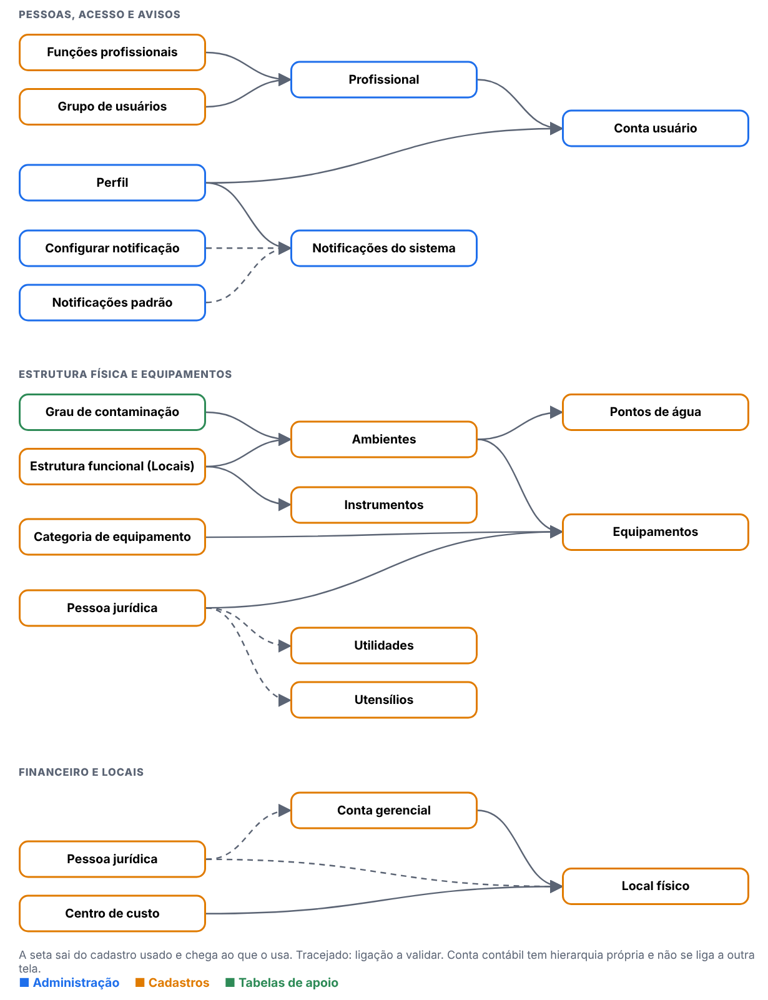
Cada seta sai do cadastro que fornece o dado e chega ao que o usa. Tracejado: ligação a validar.
| Tela | Usa | Para quê | Situação |
|---|---|---|---|
| Conta usuário | Profissional | conta preenchida pelo cadastro do profissional | visto |
| Conta usuário | Perfil | perfis da conta | visto |
| Profissional | Funções profissionais | funções do profissional | visto |
| Profissional | Grupo de usuários | grupo do profissional | visto |
| Notificações do sistema | Perfil | alterar um perfil gera aviso | visto |
| Notificações do sistema | Configurar notificação | eventos e mensagens | a validar |
| Notificações do sistema | Notificações padrão | destinatários dos avisos | a validar |
| Ambientes | Estrutura funcional (Locais) | local do ambiente | visto |
| Ambientes | Grau de contaminação | graus do ambiente | visto |
| Pontos de água | Ambientes | localização do ponto | visto |
| Equipamentos | Ambientes | local do equipamento | visto |
| Equipamentos | Categoria de equipamento | tipos de manutenção | visto |
| Equipamentos | Pessoa jurídica | fabricante e fornecedor | visto |
| Local físico | Centro de custo | centro de custo do local | visto |
| Local físico | Conta gerencial | conta gerencial do local | visto |
| Local físico | Pessoa jurídica | empresa do local | a validar |
| Conta gerencial | Pessoa jurídica | empresa da conta | a validar |
| Instrumentos | Estrutura funcional (Locais) | árvore de estrutura | visto |
| Utilidades | Pessoa jurídica | fabricante | a validar |
| Utensílios | Pessoa jurídica | fabricante | a validar |
Com os outros módulos (do código do sistema entregue)
O Principal é a porta de entrada dos demais módulos e é usado de três formas. Confirmar com o desenvolvimento se a versão nova mantém o mesmo desenho.
| Forma | O que acontece | Quem usa |
|---|---|---|
| Entrada no sistema e permissões, por serviço | Os módulos pedem ao Principal quem é o usuário e o que ele pode fazer em cada tela | Todos os módulos |
| Consulta aos cadastros, por serviço | Ambiente, Equipamento, Local, Pessoa jurídica, Utensílio, Utilidade, Função profissional, Usuário e Notificação ficam disponíveis a outros módulos | Módulos que precisam desses cadastros |
| Leitura direta do banco, por atalhos | Estoque e Produção leem tabelas do Principal direto no banco. Qualquer mudança nelas pode quebrar esses módulos | Estoque e Produção |
Fonte: 1.principal/06-modelo-de-dados.md, seção 10.
Menu Administração
Profissional
Menu: Administração · Situação na versão nova: Testada
1. Manual: Profissional
O que a tela faz
Cadastro das pessoas que trabalham na empresa (profissionais). É o primeiro passo para criar um usuário: Profissional (Incluir) → Conta usuário (login e validade) → Perfis (permissão).
- São 15 campos obrigatórios; cada um é recusado com mensagem clara, antes da pergunta de confirmação (no legado a ordem era diferente).
- O CPF não é validado: aceitou 000.000.000-00, 111.111.111-11, dígito errado e letras. Só o CPF repetido é recusado. (O legado validava.)
- Editar não exige justificativa; o campo de justificativa é opcional e não é gravado no histórico. O telefone alterado não entra no histórico.
- Inativar exige justificativa e grava "ATIVO SIM → NÃO" e "JUSTIFICATIVA INATIVO".
- Excluir com justificativa grava e some da lista. Profissional com conta, ou que já criou registros, não pode ser excluído, e a recusa não diz qual é a associação.
Antes de começar (preparo do teste)
- Usuário com perfil
0.T.TESTE_ADMIN. - Registros novos começam por
T.. - Todo registro novo começa com
T.(se o ponto falhar, useT-e anote o campo). - Dados de teste ficam no ambiente: não apague o que não criou.
Como usar, passo a passo
| # | O que fazer | O que deve aparecer | Caso do plano |
|---|---|---|---|
| 1 | Abrir Administração > Profissional e clicar em Incluir. | O formulário abre. | CT-PRI-040 |
| 2 | Salvar sem preencher. Repetir deixando em branco cada campo obrigatório, um de cada vez. | 15 obrigatórios; cada um é recusado com mensagem, antes da pergunta de confirmação. | CT-PRI-041 |
| 3 | Preencher tudo e informar CPFs: 000.000.000-00, 111.111.111-11, um com dígito errado e um com letras. | Deveriam ser recusados. Hoje são aceitos: anote N-016. | CT-PRI-041 |
| 4 | Salvar o profissional T. PROFISSIONAL TESTE e abrir o histórico. |
"INCLUSÃO DO REGISTRO", com usuário, data e hora. | CT-PRI-040 |
| 5 | Editar cargo, e-mail, matrícula e telefone, preenchendo a justificativa de edição. | Hoje: grava sem exigir justificativa. Abra o histórico e confira cada campo e a justificativa. | CT-PRI-044 |
| 6 | Inativar o profissional com e sem justificativa. Tentar entrar com ele. | Exige justificativa; "Usuário inativo." | CT-PRI-045 |
| 7 | Excluir um profissional sem conta, sem justificativa e depois com. | Sem justificativa recusa; com justificativa exclui. | CT-PRI-047, 049 |
| 8 | Tentar excluir um profissional que tem conta. | Recusado. Anote se a mensagem diz qual associação impede. | CT-PRI-048 |
Como a tela é


2. Regras de negócio: Profissional
Regras que a tela mostrou nos testes. A classe compara com o sistema entregue: Igual, Regressão (piorou), Melhoria, Novo (sem resultado no sistema entregue) ou Bloqueado.
| Caso | Cenário | Legado | Versão nova (o que a tela mostrou) | Classe | Defeito |
|---|---|---|---|---|---|
| CT-PRI-041 | Campos obrigatórios e formatos | Passou (12 obrigatórios) | 15 obrigatórios recusados um a um. CPF não validado | Regressão | DV-PRI-N-016 |
| CT-PRI-044 | Editar com justificativa e ver o histórico | Falhou (DV-PRI-004) | Grava sem pedir justificativa; a justificativa digitada não é gravada; telefone não entra no histórico. O cargo em branco do legado não se repete | Regressão | DV-PRI-N-015 |
| CT-PRI-045 | Inativar com justificativa | Passou | Exige justificativa; histórico "ATIVO SIM → NÃO"; o usuário não entra | Igual | — |
| CT-PRI-047 | Excluir sem histórico | Passou (falta DBA) | Exclui com justificativa (204) e some da lista; o histórico do excluído deixa de ser acessível. Falta o DBA confirmar a lixeira | Igual | — |
| CT-PRI-048 | Excluir profissional com conta ou histórico | Falhou (DV-PRI-006) | Recusado: "existem associações para este usuário", sem dizer qual. O legado excluía sem avisar | Melhoria | — |
| CT-PRI-049 | Excluir sem justificativa | Passou | Profissional: "A justificativa é obrigatória." | Igual | — |
3. Integração: Profissional
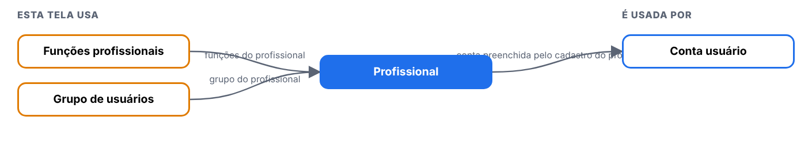
| Tela | Relação | Para quê | Situação |
|---|---|---|---|
| Funções profissionais | esta tela usa | funções do profissional | visto |
| Grupo de usuários | esta tela usa | grupo do profissional | visto |
| Conta usuário | usa esta tela | conta preenchida pelo cadastro do profissional | visto |
4. Erros: Profissional
| Defeito | Gravidade | O que acontece |
|---|---|---|
| DV-PRI-N-015 | Alta | Editar profissional não exige justificativa, a justificativa digitada não é gravada e o telefone alterado não entra no histórico. Regressão (o legado exigia e gravava). |
| DV-PRI-N-016 | Alta | CPF não é validado (000.000.000-00, 111.111.111-11, dígito errado e letras aceitos). Regressão pelo código (usuario_ed.aspx.cs:1980 valida no legado); o legado não foi rodado na tela. |
5. Onde melhorar: Profissional
- Validar os dígitos do CPF e a lista de CPFs negados, como o legado (N-016).
- Tornar a justificativa de edição obrigatória, gravá-la no histórico e registrar todo campo alterado, inclusive telefone (N-015; requisito RF-PRI-020/024).
- Quando a exclusão for recusada, dizer qual é a associação (RF-PRI-041).
Notificações padrão
Menu: Administração · Situação na versão nova: Testada
1. Manual: Notificações padrão
O que a tela faz
Tela do menu Administração que abre com lista e pesquisa na versão nova.
- Botões: Incluir não, Excel não, Imprimir não. Histórico (Log): sim.
- Campos obrigatórios (marcados com asterisco): (só edição de destinatários).
- Lista fixa de 10 mensagens (códigos 1 a 7, 9, 10, 12); só Editar e Log.
- Legado: Não testada; o código não pede justificativa (a confirmar).
Antes de começar (preparo do teste)
- Usuário com a função da tela no perfil (
[usuário de teste], que cobre Administração e Cadastros). - Registros novos começam por
T.; dados ficam no ambiente. - Todo registro novo começa com
T.(se o ponto falhar, useT-e anote o campo). - Dados de teste ficam no ambiente: não apague o que não criou.
Como usar, passo a passo
| # | O que fazer | O que deve aparecer | Caso do plano |
|---|---|---|---|
| 1 | Entrar com um usuário que tenha o perfil 0.T.TESTE_ADMIN ou 0.T.TESTE_CADASTRO e abrir o menu da tela. |
A lista abre com pesquisa. Anote se há os botões Incluir, Excel e Imprimir. | R3-NP-01 |
| 2 | Clicar em Incluir e salvar sem preencher nada. Repetir deixando em branco os campos marcados com asterisco, um de cada vez. | Cada tentativa é recusada com mensagem clara, antes de gravar. Anote a mensagem de cada campo. | — |
| 3 | Preencher só o obrigatório, com nome começando por T., e salvar. Depois incluir outro, completo. Testar os limites de tamanho que a tela mostrar (passar do tamanho e digitar letras onde é número). |
Grava, aparece na lista e o histórico mostra a inclusão. Anote o que a tela corta ou recusa. | — |
| 4 | Incluir de novo o mesmo código ou nome. | Recusa duplicado, ou aceita? Anote (no legado, descrições repetidas eram aceitas em alguns cadastros). | — |
| 5 | Alterar um campo sem justificativa e depois com justificativa. | Anote se a justificativa é pedida e se o histórico mostra campo, valor antigo, valor novo, usuário, data e justificativa. | R3-NP-03, R3-NP-04, R3-NP-05 |
| 6 | Inativar o registro (com justificativa) e abrir a tela que usa esse cadastro, se houver. | O registro inativo não aparece para novas escolhas; os antigos continuam mostrando o valor. | — |
| 7 | Excluir um registro recém-criado, sem uso. Depois tentar excluir um que esteja ligado a outro cadastro. | O sem uso é excluído (anote se pediu justificativa); o ligado é recusado informando a dependência. | — |
| 8 | Pesquisar por parte do nome, com e sem acento, em maiúsculas e minúsculas. | Encontra. No legado e em outras telas novas, a pesquisa não ignora acento (DV-PRI-008): anote. | R3-NP-02 |
| 9 | Gerar o Excel e o Imprimir com um filtro ativo. | Mesmo conteúdo da lista filtrada. | — |
2. Regras de negócio: Notificações padrão
Regras que a tela mostrou nos testes. A classe compara com o sistema entregue: Igual, Regressão (piorou), Melhoria, Novo (sem resultado no sistema entregue) ou Bloqueado.
| Caso | Cenário | Legado | Versão nova (o que a tela mostrou) | Classe | Defeito |
|---|---|---|---|---|---|
| R3-NP-01 | Abertura e botões | não testada no legado | Lista com Código e Descrição, filtros Código e Descrição, PESQUISAR e LIMPAR. Sem Incluir, Excel e Imprimir; cada linha tem Editar e LOG. 10 mensagens (ids 1 a 7, 9, 10 e 12) | Novo | — |
| R3-NP-02 | Pesquisa | DV-PRI-008 | Código 5 acha; "profissional" acha; "PRODUÇÃO" acha, "producao" não acha; "inclusão" acha, "INCLUSAO" não acha | Igual | — |
| R3-NP-03 | Editar destinatários | não testada no legado | Duas listas por campo (Usuários, Perfis, Funções profissionais) com os botões >> e << (desabilitados até escolher). Movi 1 usuário, 1 perfil e 1 função e gravei: pergunta "Confirma a alteração do item?" e depois "Registro salvo com sucesso!". Reabrindo, os três estavam gravados |
Novo | — |
| R3-NP-04 | Justificativa | o inventário do legado já dizia "não pede justificativa", a confirmar | Não pede justificativa para alterar quem recebe o aviso | Igual | N-030 |
| R3-NP-05 | Histórico | não testada no legado | O Log mostra uma linha por campo (USUARIOS, PERFIS, FUNCAO_PROFISSIONAL) com valor antigo e novo, data, hora e usuário, em 3 páginas; sem coluna de justificativa | Novo | N-029 |
| R3-NP-06 | Desfazer | não testada no legado | Retirei o que coloquei (a configuração voltou ao que era no início: usuário e perfil ADMINISTRADOR) | Novo | — |
3. Integração: Notificações padrão
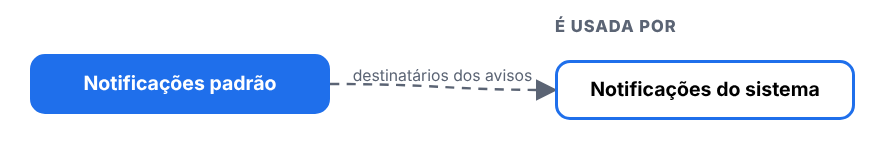
| Tela | Relação | Para quê | Situação |
|---|---|---|---|
| Notificações do sistema | usa esta tela | destinatários dos avisos | a validar |
4. Erros: Notificações padrão
| Defeito | Gravidade | O que acontece |
|---|---|---|
| DV-PRI-N-030 | Média | Configurar notificação não tem histórico nem justificativa; Notificações padrão não pede justificativa. Quem recebe os avisos de eventos regulatórios (alteração de perfil, novo profissional, documento criado) pode mudar sem rastro |
| DV-PRI-N-029 | Alta | O histórico (Log) não mostra a justificativa digitada, em 8 das 10 telas de cadastro (Pontos de água, Utilidades, Utensílios, Categoria, Local físico, Conta gerencial, Grupo, Funções; também em Notificações padrão, que nem pede). A justificativa é gravada (a API de log a devolve); só a tela esconde. Aparece em Instrumentos e Conta contábil |
5. Onde melhorar: Notificações padrão
- N-030: Histórico com usuário, data, antes e depois, e justificativa.
- N-029: Mostrar quem, quando, o que mudou e por quê.
Configurar notificação
Menu: Administração · Situação na versão nova: Testada
1. Manual: Configurar notificação
O que a tela faz
Tela do menu Administração que abre com lista e pesquisa na versão nova.
- Botões: Incluir não, Excel não, Imprimir não. Histórico (Log): não.
- Campos obrigatórios (marcados com asterisco): Título, Mensagem.
- 6 tipos de evento (Principal 3, GQ 2, Documentos 1); só o ícone "Configurar evento".
- Legado: Não testada.
Antes de começar (preparo do teste)
- Usuário com a função da tela no perfil (
[usuário de teste], que cobre Administração e Cadastros). - Registros novos começam por
T.; dados ficam no ambiente. - Todo registro novo começa com
T.(se o ponto falhar, useT-e anote o campo). - Dados de teste ficam no ambiente: não apague o que não criou.
Como usar, passo a passo
| # | O que fazer | O que deve aparecer | Caso do plano |
|---|---|---|---|
| 1 | Entrar com um usuário que tenha o perfil 0.T.TESTE_ADMIN ou 0.T.TESTE_CADASTRO e abrir o menu da tela. |
A lista abre com pesquisa. Anote se há os botões Incluir, Excel e Imprimir. | R3-CN-01 |
| 2 | Clicar em Incluir e salvar sem preencher nada. Repetir deixando em branco os campos marcados com asterisco, um de cada vez. | Cada tentativa é recusada com mensagem clara, antes de gravar. Anote a mensagem de cada campo. | — |
| 3 | Preencher só o obrigatório, com nome começando por T., e salvar. Depois incluir outro, completo. Testar os limites de tamanho que a tela mostrar (passar do tamanho e digitar letras onde é número). |
Grava, aparece na lista e o histórico mostra a inclusão. Anote o que a tela corta ou recusa. | — |
| 4 | Incluir de novo o mesmo código ou nome. | Recusa duplicado, ou aceita? Anote (no legado, descrições repetidas eram aceitas em alguns cadastros). | — |
| 5 | Alterar um campo sem justificativa e depois com justificativa. | Anote se a justificativa é pedida e se o histórico mostra campo, valor antigo, valor novo, usuário, data e justificativa. | R3-CN-03, R3-CN-06 |
| 6 | Inativar o registro (com justificativa) e abrir a tela que usa esse cadastro, se houver. | O registro inativo não aparece para novas escolhas; os antigos continuam mostrando o valor. | — |
| 7 | Excluir um registro recém-criado, sem uso. Depois tentar excluir um que esteja ligado a outro cadastro. | O sem uso é excluído (anote se pediu justificativa); o ligado é recusado informando a dependência. | — |
| 8 | Pesquisar por parte do nome, com e sem acento, em maiúsculas e minúsculas. | Encontra. No legado e em outras telas novas, a pesquisa não ignora acento (DV-PRI-008): anote. | R3-CN-02 |
| 9 | Gerar o Excel e o Imprimir com um filtro ativo. | Mesmo conteúdo da lista filtrada. | — |
2. Regras de negócio: Configurar notificação
Regras que a tela mostrou nos testes. A classe compara com o sistema entregue: Igual, Regressão (piorou), Melhoria, Novo (sem resultado no sistema entregue) ou Bloqueado.
| Caso | Cenário | Legado | Versão nova (o que a tela mostrou) | Classe | Defeito |
|---|---|---|---|---|---|
| R3-CN-01 | Abertura | não testada no legado | 6 tipos de evento (Principal: Alteração de perfil, Notificação legada, Novo profissional; GQ: Avaliação finalizada, Treinamento concluído; Documentos: Documento criado). Só o ícone "Configurar evento". Sem Log, Incluir, Excel e Imprimir | Novo | N-030 |
| R3-CN-02 | Filtro por módulo | não testada no legado | Principal (3), GQ (2), Documentos (1). Depois de filtrar por um módulo, escolher TODOS e pesquisar continua mostrando só o módulo anterior; só LIMPAR volta aos 6 | Novo | N-031 |
| R3-CN-03 | Editar (campos) | não testada no legado | Módulo e Tipo (somente leitura), Título (100), níveis de aprovação, Usuários, Setores, Funções, "Notificar por e-mail" (a própria tela avisa que o SMTP está indisponível) e Mensagem em editor de texto formatado | Novo | — |
| R3-CN-04 | Salvar | não testada no legado | Tipo 2 (Notificação legada): salvar sem mexer pede "Confirma a alteração da configuração?" e responde "Registro salvo com sucesso!". Preenchi mensagem, 1 usuário, 1 setor e 1 função e gravei (PUT 200); a API recebeu tudo. Depois devolvi ao estado original | Novo | — |
| R3-CN-05 | Mensagem salva no editor | não testada no legado | O editor abre vazio ao reabrir (a mensagem existe: ao salvar sem digitar, a tela reenvia a mensagem antiga "Notificacao importada do sistema legado."). Quem digita algo substitui a mensagem sem ver a anterior | Novo | N-031 |
| R3-CN-06 | Justificativa e histórico | não testada no legado | Não pede justificativa e não há ícone de Log: quem recebe cada aviso de evento (Alteração de perfil, Novo profissional, Documento criado) pode ser trocado sem rastro | Novo | N-030 |
3. Integração: Configurar notificação
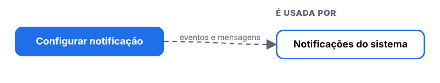
| Tela | Relação | Para quê | Situação |
|---|---|---|---|
| Notificações do sistema | usa esta tela | eventos e mensagens | a validar |
4. Erros: Configurar notificação
| Defeito | Gravidade | O que acontece |
|---|---|---|
| DV-PRI-N-030 | Média | Configurar notificação não tem histórico nem justificativa; Notificações padrão não pede justificativa. Quem recebe os avisos de eventos regulatórios (alteração de perfil, novo profissional, documento criado) pode mudar sem rastro |
| DV-PRI-N-031 | Média | Configurar notificação: o filtro "TODOS" não limpa o módulo escolhido antes; o editor da mensagem abre vazio ao reabrir (a mensagem existe) e quem digita substitui a anterior sem vê-la |
5. Onde melhorar: Configurar notificação
- N-030: Histórico com usuário, data, antes e depois, e justificativa.
- N-031: Filtro e editor corretos.
Notificações do sistema
Menu: Administração · Situação na versão nova: Testada
1. Manual: Notificações do sistema
O que a tela faz
Tela do menu Administração que abre com lista e pesquisa na versão nova.
- Botões: Incluir não, Excel não, Imprimir não. Histórico (Log): detalhe com log da notificação.
- Campos obrigatórios (marcados com asterisco): —.
- Só Visualizar e Responder; filtros Pendente leitura, Código, Status.
- Legado: Não testada; o código não pede justificativa (a confirmar).
Antes de começar (preparo do teste)
- Usuário com a função da tela no perfil (
[usuário de teste], que cobre Administração e Cadastros). - Registros novos começam por
T.; dados ficam no ambiente. - Todo registro novo começa com
T.(se o ponto falhar, useT-e anote o campo). - Dados de teste ficam no ambiente: não apague o que não criou.
Como usar, passo a passo
| # | O que fazer | O que deve aparecer | Caso do plano |
|---|---|---|---|
| 1 | Entrar com um usuário que tenha o perfil 0.T.TESTE_ADMIN ou 0.T.TESTE_CADASTRO e abrir o menu da tela. |
A lista abre com pesquisa. Anote se há os botões Incluir, Excel e Imprimir. | R3-NS-01 |
| 2 | Clicar em Incluir e salvar sem preencher nada. Repetir deixando em branco os campos marcados com asterisco, um de cada vez. | Cada tentativa é recusada com mensagem clara, antes de gravar. Anote a mensagem de cada campo. | — |
| 3 | Preencher só o obrigatório, com nome começando por T., e salvar. Depois incluir outro, completo. Testar os limites de tamanho que a tela mostrar (passar do tamanho e digitar letras onde é número). |
Grava, aparece na lista e o histórico mostra a inclusão. Anote o que a tela corta ou recusa. | — |
| 4 | Incluir de novo o mesmo código ou nome. | Recusa duplicado, ou aceita? Anote (no legado, descrições repetidas eram aceitas em alguns cadastros). | — |
| 5 | Alterar um campo sem justificativa e depois com justificativa. | Anote se a justificativa é pedida e se o histórico mostra campo, valor antigo, valor novo, usuário, data e justificativa. | — |
| 6 | Inativar o registro (com justificativa) e abrir a tela que usa esse cadastro, se houver. | O registro inativo não aparece para novas escolhas; os antigos continuam mostrando o valor. | — |
| 7 | Excluir um registro recém-criado, sem uso. Depois tentar excluir um que esteja ligado a outro cadastro. | O sem uso é excluído (anote se pediu justificativa); o ligado é recusado informando a dependência. | — |
| 8 | Pesquisar por parte do nome, com e sem acento, em maiúsculas e minúsculas. | Encontra. No legado e em outras telas novas, a pesquisa não ignora acento (DV-PRI-008): anote. | R3-NS-02 |
| 9 | Gerar o Excel e o Imprimir com um filtro ativo. | Mesmo conteúdo da lista filtrada. | — |
2. Regras de negócio: Notificações do sistema
Regras que a tela mostrou nos testes. A classe compara com o sistema entregue: Igual, Regressão (piorou), Melhoria, Novo (sem resultado no sistema entregue) ou Bloqueado.
| Caso | Cenário | Legado | Versão nova (o que a tela mostrou) | Classe | Defeito |
|---|---|---|---|---|---|
| R3-NS-01 | Abertura | não testada no legado | Lista de 10 por página (Anterior e Próxima) com Código, Data da notificação, Data da sua leitura, Tipo, Status. Filtros: Pendente leitura (SIM, NÃO, TODOS; já abre em SIM), Código (número) e Status. Só o ícone Visualizar. Sem Excel e Imprimir | Novo | — |
| R3-NS-02 | Filtros | não testada no legado | SIM: 52; NÃO: 5; TODOS: 57 (52 + 5 fecham); o número do sino (52) é o das pendentes. Status: NOTIFICADO 10+, PENDENTE 1, FINALIZADO 2, CANCELADO e RESPONDIDO 0 (naquele momento). Código "abc" não é aceito (campo numérico); 999999: "Nenhuma notificação encontrada." | Novo | — |
| R3-NS-03 | Visualizar | não testada no legado | Abre a notificação (Código, Tipo, Datas, Título, Status, Mensagem) e o Log da Notificação (CRIADO e ACESSO, com a data e hora). Ao abrir, a notificação sai de "pendente de leitura" e o status muda de NOTIFICADO (na lista) para PENDENTE (no detalhe); o número do sino só baixa ao recarregar | Novo | N-034 |
| R3-NS-04 | Responder | não testada no legado | Pede "Deseja responder a notificação?" (SIM, NÃO) e não pede texto; grava "Registro salvo com sucesso!" e o status passa a RESPONDIDO | Novo | N-034 |
3. Integração: Notificações do sistema
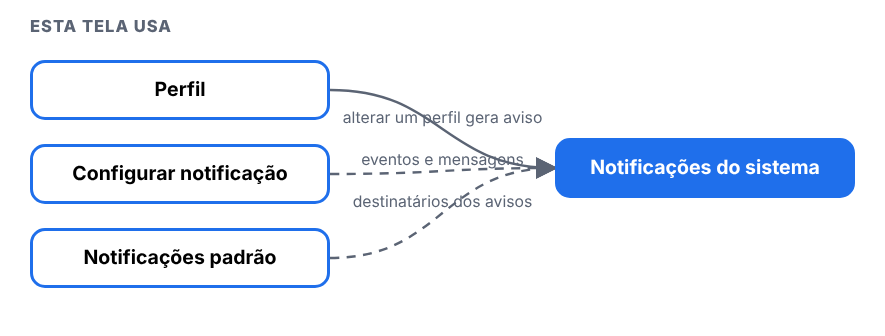
| Tela | Relação | Para quê | Situação |
|---|---|---|---|
| Perfil | esta tela usa | alterar um perfil gera aviso | visto |
| Configurar notificação | esta tela usa | eventos e mensagens | a validar |
| Notificações padrão | esta tela usa | destinatários dos avisos | a validar |
4. Erros: Notificações do sistema
| Defeito | Gravidade | O que acontece |
|---|---|---|
| DV-PRI-N-034 | Baixa | Notificações do sistema: o status muda de NOTIFICADO (lista) para PENDENTE (detalhe) ao abrir; o sino só baixa ao recarregar; Responder não pede texto; a mensagem do aviso é genérica ("permissoes revisadas"); o log da notificação traz o usuário "ADMIN" (nas outras telas vem o nome) |
5. Onde melhorar: Notificações do sistema
- N-034: Status claros e resposta com texto.
Menu Cadastros
Estrutura funcional (Locais)
Menu: Cadastros · Situação na versão nova: Testada
1. Manual: Estrutura funcional (Locais)
O que a tela faz
Árvore da estrutura da empresa (locais, áreas e setores), cada um com nome, responsável e sigla. É usada pelos ambientes e por outras telas.
- A tela é uma árvore com os botões ADICIONAR, EDITAR, EXCLUIR, IMPRIMIR e VER LOG sobre o item marcado. Não tem campo de pesquisa.
- Obrigatórios: Local (até 100 caracteres), Responsável e sigla (até 5). Sigla repetida: "Ja existe outra estrutura com a sigla informada!".
- Alterar não pede justificativa (como no legado). Inativar grava, mas o local inativo continua na árvore e aceita um filho sob ele.
- Excluir pede só a confirmação, sem justificativa; o item some e o histórico dele deixa de existir (404).
- Excluir local com filhos é recusado: "Existem Estruturas Funcionais filhas desta."
- Excel e Imprimir geram arquivo.
Antes de começar (preparo do teste)
- Usuário com a função Cadastros > Estrutura funcional (
[usuário de teste]). - Sigla com até 5 caracteres (
T.001). - Todo registro novo começa com
T.(se o ponto falhar, useT-e anote o campo). - Dados de teste ficam no ambiente: não apague o que não criou.
Como usar, passo a passo
| # | O que fazer | O que deve aparecer | Caso do plano |
|---|---|---|---|
| 1 | Abrir Cadastros > Estrutura funcional e marcar "TESTE ESTRUTURA FUNCIONAL". | A árvore abre; os botões agem sobre o item marcado. | — |
| 2 | Clicar em ADICIONAR e salvar vazio. | Mensagens: "Preencha o Local", "Preencha o Responsável", "Preencha a sigla". Anote cada uma. | RG-PRI-040 |
| 3 | Incluir T.LOCAL 01 com sigla T.001. Incluir outro com a mesma sigla. |
O primeiro grava; o segundo é recusado por sigla repetida (a mensagem pode sumir em 1 s). | RG-PRI-040 |
| 4 | Digitar mais de 100 caracteres no nome e mais de 5 na sigla. | A tela corta. | RG-PRI-041 |
| 5 | Alterar o nome. Abrir VER LOG. | Anote se pede justificativa e o que o histórico mostra. | RG-PRI-042, 048 |
| 6 | Inativar o local e criar um filho sob ele. | O inativo continua na árvore e aceita filho (a corrigir). | RG-PRI-043 |
| 7 | Excluir o pai que tem filho. | Recusado: "Existem Estruturas Funcionais filhas desta." | RG-PRI-045 |
| 8 | Excluir o filho e depois o pai. | Pede só a confirmação, sem justificativa. Abra o VER LOG do excluído: 404. | RG-PRI-044 |
| 9 | Clicar em EXCEL e IMPRIMIR. | Arquivo .xlsx e PDF. | RG-PRI-047 |
Como a tela é


2. Regras de negócio: Estrutura funcional (Locais)
Regras que a tela mostrou nos testes. A classe compara com o sistema entregue: Igual, Regressão (piorou), Melhoria, Novo (sem resultado no sistema entregue) ou Bloqueado.
| Caso | Cenário | Legado | Versão nova (o que a tela mostrou) | Classe | Defeito |
|---|---|---|---|---|---|
| RG-PRI-040 | Incluir e campos obrigatórios | sem caso | Mensagens por campo; pede confirmação; sigla repetida recusada | Igual | N-003 |
| RG-PRI-041 | Limites e formatos | sem caso | Local corta em 100; sigla em 5 | Igual | — |
| RG-PRI-042 | Alterar com justificativa e histórico | sem caso | Alterar não pede justificativa | Igual | — |
| RG-PRI-043 | Inativar | sem caso | O inativo continua na árvore; aceitou criar filho sob local inativo | Igual | — |
| RG-PRI-044 | Excluir | sem caso | Sem justificativa; histórico do excluído some | Igual | DV-PRI-N-007 |
| RG-PRI-045 | Excluir com dependentes | sem caso | Com filhos: recusado. Local usado por usuário: não testável | Novo | — |
| RG-PRI-047 | Excel e Imprimir | sem caso | Baixa .xlsx (200) e gera PDF (200) | Igual | — |
| RG-PRI-048 | Histórico | sem caso | Inclusão, alteração e inativação, sem justificativa; textos sem acento | Igual | N-002 |
| RG-PRI-049 | Hora do histórico | sem caso | É a hora do servidor | Igual | — |
3. Integração: Estrutura funcional (Locais)
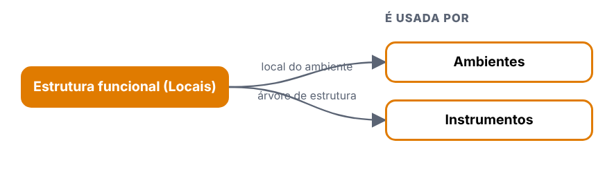
| Tela | Relação | Para quê | Situação |
|---|---|---|---|
| Ambientes | usa esta tela | local do ambiente | visto |
| Instrumentos | usa esta tela | árvore de estrutura | visto |
4. Erros: Estrutura funcional (Locais)
| Defeito | Gravidade | O que acontece |
|---|---|---|
| DV-PRI-N-007 | Alta | Local e Centro de custo são excluídos sem justificativa e o histórico do excluído deixa de existir. Persiste (DV-PRI-009). |
| DV-PRI-N-003 | Média | Mensagens de erro da API somem em cerca de 1 segundo e vêm sem acento. |
| DV-PRI-N-002 | Baixa | Textos do histórico sem acento ("INCLUSAO", "NAO"). |
5. Onde melhorar: Estrutura funcional (Locais)
- Exigir justificativa ao excluir e manter o histórico do excluído (N-007; RF-PRI-042).
- Impedir criar filho sob local inativo, ou tirar o inativo da árvore.
- Exibir o texto do histórico com acento.
Centro de custo
Menu: Cadastros · Situação na versão nova: Testada
1. Manual: Centro de custo
O que a tela faz
Cadastro dos centros de custo (código numérico de até 6 dígitos e nome), usados por outros módulos.
- Obrigatórios: código (até 6, só números) e nome (até 255). "Ativo" já vem "Sim". Incluir pede confirmação.
- O código aceita letras ao digitar; "AB12" só é recusado ao salvar. Código duplicado: "Codigo ja cadastrado."
- Alterar e inativar exigem justificativa.
- Excluir pede só a confirmação, sem justificativa; some da lista e o histórico dele fica inacessível (404).
- Pesquisa: "producao" não acha "PRODUÇÃO".
- O legado apagava o ponto do nome ("T.CENTRO" virava "TCENTRO"); a versão nova mantém.
Antes de começar (preparo do teste)
- Usuário com a função Cadastros > Centro de custo (
[usuário de teste];[usuário de teste]só tem esta tela). - Códigos de teste: 9000nn.
- Todo registro novo começa com
T.(se o ponto falhar, useT-e anote o campo). - Dados de teste ficam no ambiente: não apague o que não criou.
Como usar, passo a passo
| # | O que fazer | O que deve aparecer | Caso do plano |
|---|---|---|---|
| 1 | Abrir Cadastros > Centro de custo e clicar em Incluir. Salvar vazio. | "O código é obrigatório e deve conter até 6 números." e "O nome é obrigatório…" | RG-PRI-040 |
| 2 | Incluir código 900001 e nome T.CENTRO 01. |
Pede confirmação e grava. O ponto do nome é mantido. | RG-PRI-040 |
| 3 | Incluir de novo o código 900001. |
"Codigo ja cadastrado." (some em 1 s). | RG-PRI-040 |
| 4 | Digitar letras no código e mais de 255 caracteres no nome. | O código corta em 6; "AB12" só é recusado ao salvar. | RG-PRI-041 |
| 5 | Alterar o nome, com justificativa. Abrir o histórico. | Exige justificativa; histórico com o campo. | RG-PRI-042 |
| 6 | Inativar, com justificativa. | Grava. | RG-PRI-043 |
| 7 | Pesquisar producao e produção. |
Sem acento não acha. | RG-PRI-046 |
| 8 | Excluir o 900002. |
Só a confirmação. Abra o histórico do excluído: inacessível. | RG-PRI-044 |
| 9 | Gerar Excel e Imprimir. | Arquivo .xlsx e PDF. | RG-PRI-047 |
Como a tela é
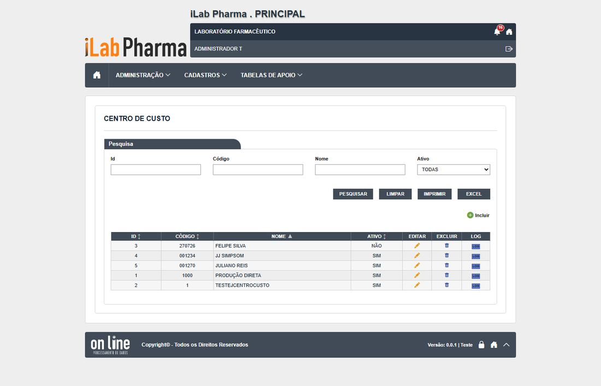
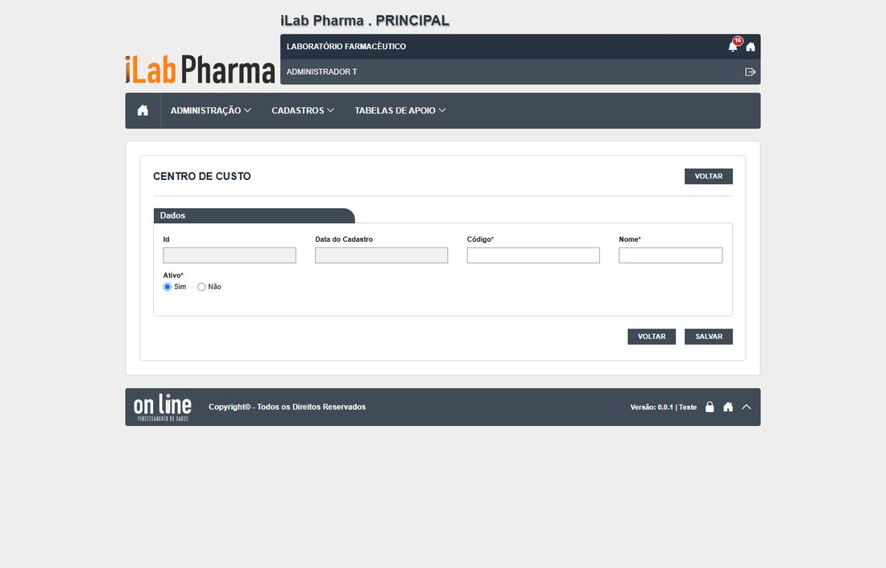
2. Regras de negócio: Centro de custo
Regras que a tela mostrou nos testes. A classe compara com o sistema entregue: Igual, Regressão (piorou), Melhoria, Novo (sem resultado no sistema entregue) ou Bloqueado.
| Caso | Cenário | Legado | Versão nova (o que a tela mostrou) | Classe | Defeito |
|---|---|---|---|---|---|
| RG-PRI-040 | Incluir e obrigatórios | sem caso | "O código é obrigatório e deve conter até 6 números."; duplicado recusado | Igual | N-003 |
| RG-PRI-041 | Limites e formatos | CT-PRI-091 | Código corta em 6; nome em 255. O ponto do nome é mantido | Melhoria | — |
| RG-PRI-042 | Alterar com justificativa e histórico | sem caso | Exige justificativa; histórico mostra o campo | Igual | — |
| RG-PRI-043 | Inativar | sem caso | Grava (exige justificativa) | Igual | — |
| RG-PRI-044 | Excluir | sem caso | Só confirmação, sem justificativa; histórico some | Igual | DV-PRI-N-007 |
| RG-PRI-046 | Pesquisa com e sem acento | sem caso | "producao" não acha "PRODUÇÃO" | Igual | DV-PRI-N-009 |
| RG-PRI-047 | Excel e Imprimir | sem caso | Baixa .xlsx e gera PDF | Igual | — |
| RG-PRI-048 | Histórico | sem caso | Inclusão, alteração, inativação; sem acento | Igual | N-002 |
3. Integração: Centro de custo
| Tela | Relação | Para quê | Situação |
|---|---|---|---|
| Local físico | usa esta tela | centro de custo do local | visto |
4. Erros: Centro de custo
| Defeito | Gravidade | O que acontece |
|---|---|---|
| DV-PRI-N-007 | Alta | Excluído sem justificativa e com o histórico perdido (persiste do legado, DV-PRI-009). |
| DV-PRI-N-003 | Média | Mensagens de erro somem em cerca de 1 s e vêm sem acento. |
| DV-PRI-N-009 | Baixa | A pesquisa não ignora acento. |
5. Onde melhorar: Centro de custo
- Pedir justificativa na exclusão, como a tela de Grau de contaminação (N-007).
- Validar o código como número ao digitar (hoje aceita letras até salvar).
Pessoa jurídica
Menu: Cadastros · Situação na versão nova: Testada
1. Manual: Pessoa jurídica
O que a tela faz
Cadastro de empresas (fabricantes, fornecedores e outros), com CNPJ e endereço. Aparece como Fabricante e Fornecedor no cadastro de equipamentos.
- Obrigatórios: tipo de cadastro, razão social, CNPJ, CEP, logradouro, número, país, UF, município e bairro. Vazio mostra 10 mensagens claras.
- O CNPJ é validado: dígito errado, 11.111.111/1111-11 e letras são recusados ("CNPJ invalido.", mensagem que some da tela); CNPJ repetido: "CNPJ ja cadastrado!".
- Alterar o nome fantasia grava sem pedir justificativa, e o histórico traz a coluna Usuário em branco.
- Inativar exige justificativa (o legado gravava sem pedir); a empresa inativa some das listas de Fabricante e Fornecedor. O histórico não mostra a justificativa.
- Não tem Excluir, só inativar (como no legado).
- O botão de pesquisa de CEP não preencheu o endereço.
Antes de começar (preparo do teste)
- Usuário
[usuário de teste]ou[usuário de teste]. - CNPJs de teste válidos (gerados) e inválidos.
- Todo registro novo começa com
T.(se o ponto falhar, useT-e anote o campo). - Dados de teste ficam no ambiente: não apague o que não criou.
Como usar, passo a passo
| # | O que fazer | O que deve aparecer | Caso do plano |
|---|---|---|---|
| 1 | Abrir Cadastros > Pessoa jurídica e clicar em Incluir. Salvar vazio. | 10 mensagens, uma por obrigatório. | CT-PRI-091 |
| 2 | Incluir só com os obrigatórios (tipo, razão social T.PJ MINIMA, CNPJ válido, CEP, logradouro, número, país, UF, município, bairro). |
Grava e aparece na lista. | CT-PRI-090 |
| 3 | Incluir outra, completa. | Grava. | CT-PRI-090 |
| 4 | Tentar CNPJ com dígito errado, 11.111.111/1111-11, com letras e um repetido. | Recusados (as mensagens somem em 1 s: grave a tela). | CT-PRI-091 |
| 5 | Alterar o nome fantasia. Abrir o histórico. | Sem justificativa. Anote se a coluna Usuário vem preenchida. | CT-PRI-092 |
| 6 | Inativar com e sem justificativa. Abrir o cadastro de equipamento e procurar a empresa em Fabricante e Fornecedor. | Exige justificativa; some das listas. | CT-PRI-093 |
| 7 | Procurar o botão Excluir. | Não existe. | CT-PRI-094 |
| 8 | Pesquisar farmaceutica e FARMACÊUTICA; pesquisar pelo CNPJ. |
Sem acento não acha; por CNPJ acha. | CT-PRI-096 |
| 9 | Gerar Excel e Imprimir. | Mesmas linhas da lista. | CT-PRI-097 |
Como a tela é
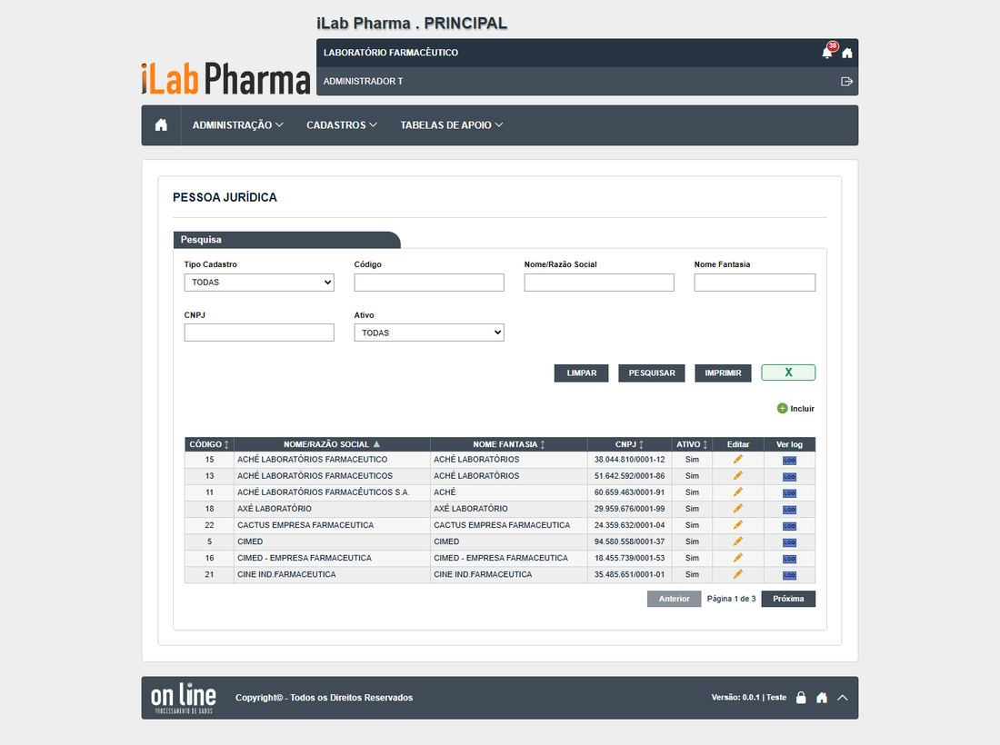
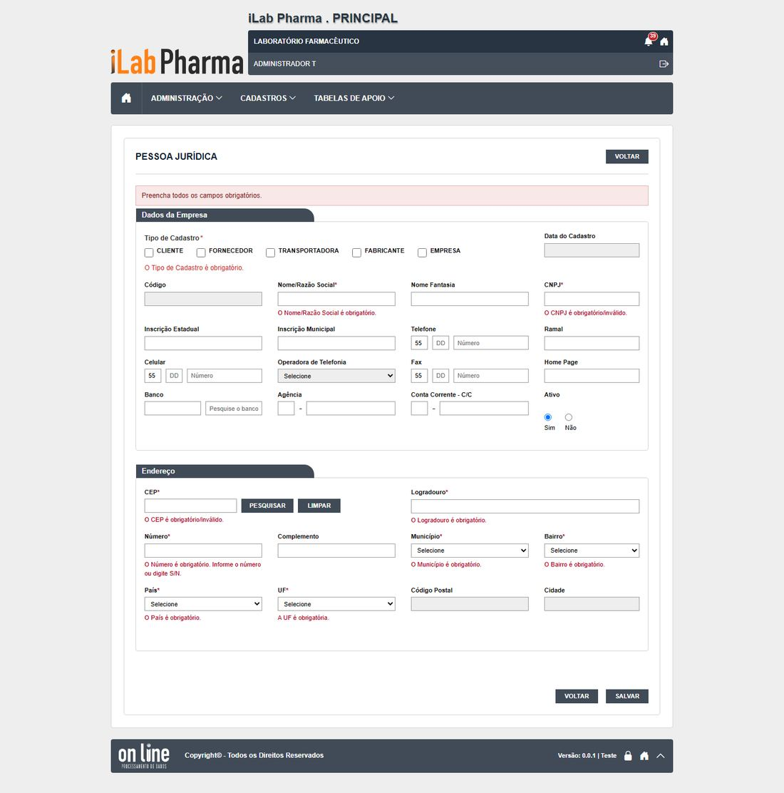
2. Regras de negócio: Pessoa jurídica
Regras que a tela mostrou nos testes. A classe compara com o sistema entregue: Igual, Regressão (piorou), Melhoria, Novo (sem resultado no sistema entregue) ou Bloqueado.
| Caso | Cenário | Legado | Versão nova (o que a tela mostrou) | Classe | Defeito |
|---|---|---|---|---|---|
| CT-PRI-090 | Incluir só obrigatórios e completo | Passou | Gravam | Igual | — |
| CT-PRI-091 | Obrigatórios e formatos | Passou | 10 mensagens; CNPJ inválido recusado; CNPJ repetido recusado | Igual | N-003, N-016 |
| CT-PRI-092 | Alterar e histórico | Falhou (DV-PRI-013) | Sem justificativa (igual ao legado); a coluna Usuário vem em branco | Regressão | DV-PRI-N-014 |
| CT-PRI-093 | Inativar | Passou (DV-PRI-013) | Exige justificativa; some de Fabricante e Fornecedor | Melhoria | — |
| CT-PRI-094/095 | Excluir | Bloqueado | A tela não tem Excluir | Bloqueado | — |
| CT-PRI-096 | Pesquisa com e sem acento | Falhou (DV-PRI-008) | "farmaceutica" não acha "FARMACÊUTICA"; por CNPJ acha | Igual | DV-PRI-008 |
| CT-PRI-097 | Excel e Imprimir | Passou | Excel com as linhas filtradas; Imprimir devolve PDF (200) | Igual | — |
3. Integração: Pessoa jurídica
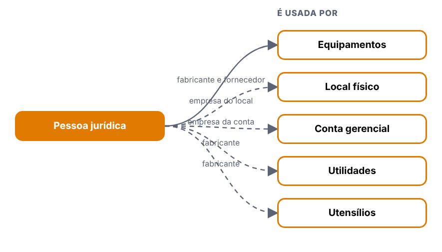
| Tela | Relação | Para quê | Situação |
|---|---|---|---|
| Equipamentos | usa esta tela | fabricante e fornecedor | visto |
| Local físico | usa esta tela | empresa do local | a validar |
| Conta gerencial | usa esta tela | empresa da conta | a validar |
| Utilidades | usa esta tela | fabricante | a validar |
| Utensílios | usa esta tela | fabricante | a validar |
4. Erros: Pessoa jurídica
| Defeito | Gravidade | O que acontece |
|---|---|---|
| DV-PRI-N-014 | Alta | O histórico de alteração mostra a coluna Usuário em branco (o legado mostrava o usuário). Regressão: perde-se a autoria (ALCOA+). |
| DV-PRI-013 | Média | Alterar sem justificativa (persiste). |
| DV-PRI-008 | Baixa | Pesquisa sem ignorar acento (persiste). |
5. Onde melhorar: Pessoa jurídica
- Preencher o Usuário no histórico (N-014).
- Exigir justificativa também ao alterar (DV-PRI-013; RF-PRI-042).
- Deixar a mensagem "CNPJ inválido" na tela (N-003).
Ambientes
Menu: Cadastros · Situação na versão nova: Testada
1. Manual: Ambientes
O que a tela faz
Cadastro dos ambientes (salas e áreas) com descrição, tag, graus de contaminação e local. Pontos de água e equipamentos se ligam a ele.
- Obrigatória só a descrição (até 255 caracteres; a de 256 é recusada com a mesma mensagem "obrigatória", que engana). Tag com até 10.
- Duas descrições iguais continuam aceitas (DV-PRI-007).
- Alterar e inativar exigem justificativa; o histórico traz campo, valor antigo e novo e a justificativa. Ambiente inativo some da lista "Localização" do Ponto de água.
- Excluir pede só "Confirma a exclusão do item?": sem justificativa.
- Excluir um ambiente ligado a um Ponto de água é aceito e deixa o ponto de água sem ambiente (o legado recusava).
- Pesquisa "laboratorio" não acha "LABORATÓRIO".
Antes de começar (preparo do teste)
- Usuário
[usuário de teste]ou[usuário de teste]. - Um Ponto de água de teste para o caso de exclusão com dependente.
- Todo registro novo começa com
T.(se o ponto falhar, useT-e anote o campo). - Dados de teste ficam no ambiente: não apague o que não criou.
Como usar, passo a passo
| # | O que fazer | O que deve aparecer | Caso do plano |
|---|---|---|---|
| 1 | Abrir Cadastros > Cadastro de ambientes e clicar em Incluir. Salvar vazio. | "A descrição é obrigatória." | CT-PRI-091 |
| 2 | Incluir só com a descrição T.AMBIENTE MIN. Depois um completo (tag, graus, local). |
Gravam; o histórico mostra "INCLUSAO DO REGISTRO". | CT-PRI-090 |
| 3 | Incluir de novo a mesma descrição. | Hoje aceita (DV-PRI-007). | CT-PRI-091 |
| 4 | Testar descrição de 255 e 256 caracteres e tag de 10 e 11. | 255 e 10 gravam; os maiores são recusados. | CT-PRI-091 |
| 5 | Alterar a tag com e sem justificativa. Abrir o histórico. | Exige justificativa; histórico campo a campo. | CT-PRI-092 |
| 6 | Inativar e abrir o Ponto de água. | O ambiente some da lista Localização. | CT-PRI-093 |
| 7 | Excluir um ambiente sem uso. | Pede só a confirmação. | CT-PRI-094 |
| 8 | Ligar um ambiente a um Ponto de água e tentar excluí-lo. | Deveria recusar; hoje exclui (N-012). | CT-PRI-095 |
| 9 | Pesquisar laboratorio e LABORATÓRIO; gerar Excel e Imprimir. |
Sem acento não acha; Excel com a lista filtrada. | CT-PRI-096, 097 |
Como a tela é
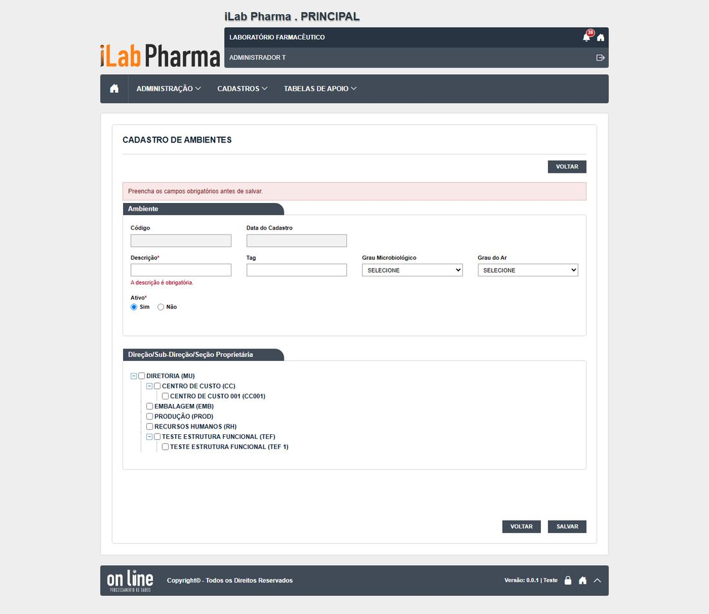
2. Regras de negócio: Ambientes
Regras que a tela mostrou nos testes. A classe compara com o sistema entregue: Igual, Regressão (piorou), Melhoria, Novo (sem resultado no sistema entregue) ou Bloqueado.
| Caso | Cenário | Legado | Versão nova (o que a tela mostrou) | Classe | Defeito |
|---|---|---|---|---|---|
| CT-PRI-090 | Incluir só descrição e completo | Passou | Gravam; histórico "INCLUSAO DO REGISTRO" | Igual | — |
| CT-PRI-091 | Obrigatórios, limites e duplicado | Passou (DV-PRI-007) | Descrição vazia, 256 e tag de 11 recusadas; descrição duplicada aceita | Igual | N-022 |
| CT-PRI-092 | Alterar com justificativa e histórico | Passou | Histórico campo a campo com justificativa | Igual | — |
| CT-PRI-093 | Inativar | Passou | Exige justificativa; some do Ponto de água | Igual | — |
| CT-PRI-094 | Excluir sem dependentes | Passou (DV-PRI-009) | Sem justificativa | Igual | N-007 |
| CT-PRI-095 | Excluir com ponto de água ligado | Falhou (DV-PRI-011) | Exclusão aceita (204); o ponto de água fica sem ambiente | Regressão | DV-PRI-N-012 |
| CT-PRI-096 | Pesquisa | Falhou (DV-PRI-008) | "laboratorio" não acha | Igual | DV-PRI-008 |
| CT-PRI-097 | Excel e Imprimir | Passou | Excel com as 3 linhas da lista; Imprimir devolve PDF | Igual | — |
3. Integração: Ambientes
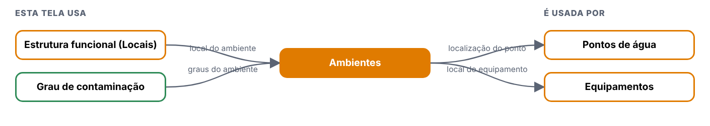
| Tela | Relação | Para quê | Situação |
|---|---|---|---|
| Estrutura funcional (Locais) | esta tela usa | local do ambiente | visto |
| Grau de contaminação | esta tela usa | graus do ambiente | visto |
| Pontos de água | usa esta tela | localização do ponto | visto |
| Equipamentos | usa esta tela | local do equipamento | visto |
4. Erros: Ambientes
| Defeito | Gravidade | O que acontece |
|---|---|---|
| DV-PRI-N-012 | Alta | Excluir um Ambiente ligado a um Ponto de água é aceito, e o ponto de água fica sem ambiente. Regressão (o legado recusava). |
| DV-PRI-N-007 | Alta | Excluir sem justificativa (estendido a Ambiente e Equipamento). |
| DV-PRI-007 | Baixa | Descrições repetidas aceitas. |
| DV-PRI-N-022 | Baixa | "A descrição é obrigatória" quando o texto passou do limite. |
5. Onde melhorar: Ambientes
- Verificar dependentes (pontos de água, equipamentos) antes de excluir e informar quais (N-012; RF-PRI-041).
- Exigir justificativa ao excluir (N-007).
- Impedir descrição repetida (DV-PRI-007).
- Mensagem de limite correta (N-022).
Equipamentos
Menu: Cadastros · Situação na versão nova: Testada
1. Manual: Equipamentos
O que a tela faz
Cadastro de equipamentos (patrimônio, modelo, série, datas, fornecedor, categoria, local), valor e capacidade.
- Obrigatórios: descrição, tag, capacidade, valor e fabricante (o fabricante não está marcado como obrigatório; o servidor diz "…obrigatorio quando a opcao Outros e selecionada" e a mensagem some da tela).
- Sem categoria o cadastro grava (no legado dava erro de servidor, DV-PRI-010).
- Fim da operação antes do início é recusado; fim futuro, recusado; data de fabricação em 2031 é aceita.
- Ao salvar a edição, o Valor é multiplicado por 10 (1500,50 vira 15005), a cada edição.
- Excluir equipamento sem uso: exclui sem justificativa (o legado recusava com mensagem de referências).
Antes de começar (preparo do teste)
- Usuário
[usuário de teste]ou[usuário de teste]. - Uma Pessoa jurídica ativa de teste (fabricante e fornecedor) e uma categoria de equipamento.
- Todo registro novo começa com
T.(se o ponto falhar, useT-e anote o campo). - Dados de teste ficam no ambiente: não apague o que não criou.
Como usar, passo a passo
| # | O que fazer | O que deve aparecer | Caso do plano |
|---|---|---|---|
| 1 | Abrir Cadastros > Cadastro de equipamentos e clicar em Incluir. Salvar vazio e depois sem o fabricante. | Descrição, tag, capacidade e valor recusados. Sem fabricante o servidor recusa (a mensagem some). | CT-PRI-090, 091 |
| 2 | Incluir só com os obrigatórios, sem categoria. | Grava (no legado dava erro). | CT-PRI-090 |
| 3 | Incluir um completo (patrimônio, modelo, série, datas, fornecedor, categoria, local). | Grava. | CT-PRI-090 |
| 4 | Testar descrição com 256 caracteres, tag com 31, fim da operação antes do início, fim futuro e data de fabricação em 2031. | Os três primeiros recusados; 2031 aceita (N-020). | CT-PRI-091 |
| 5 | Editar o equipamento com valor 1500,50: mudar só o modelo, com justificativa. Salvar. |
Reabra e confira o Valor: hoje vira 15005 (N-013). Salve de novo: 10 vezes maior. | CT-PRI-092 |
| 6 | Abrir o histórico. | Modelo antigo e novo com a justificativa, e a linha do VALOR. | CT-PRI-092 |
| 7 | Inativar com justificativa. | Lista mostra Ativo = NÃO. | CT-PRI-093 |
| 8 | Excluir um equipamento sem uso. | Exclui sem pedir justificativa. | CT-PRI-094 |
| 9 | Pesquisar pressao e PRESSÃO; gerar Excel e Imprimir. |
Sem acento não acha. | CT-PRI-096, 097 |
Como a tela é
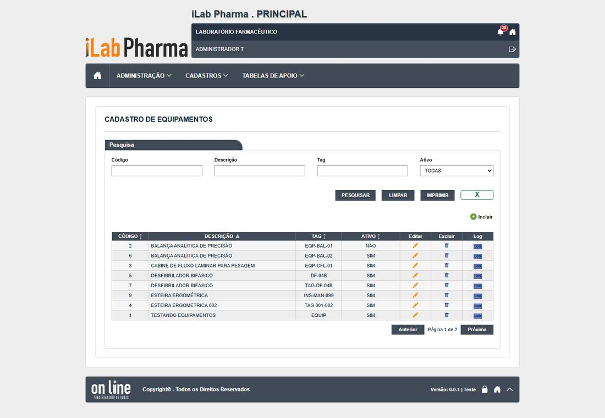
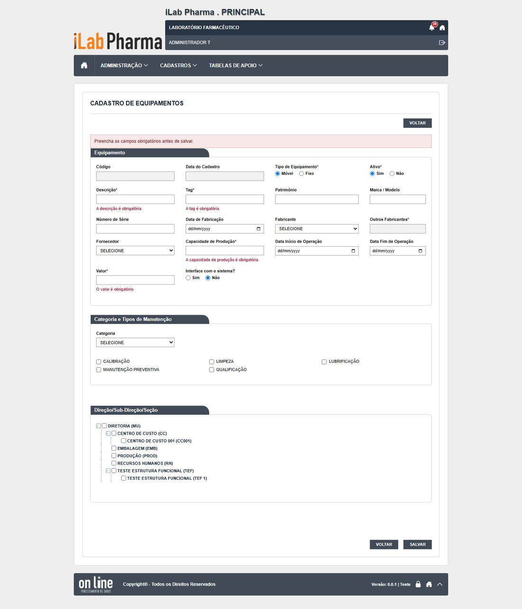
2. Regras de negócio: Equipamentos
Regras que a tela mostrou nos testes. A classe compara com o sistema entregue: Igual, Regressão (piorou), Melhoria, Novo (sem resultado no sistema entregue) ou Bloqueado.
| Caso | Cenário | Legado | Versão nova (o que a tela mostrou) | Classe | Defeito |
|---|---|---|---|---|---|
| CT-PRI-090 | Incluir só obrigatórios e completo | Falhou (DV-PRI-010) | Sem categoria grava; sem fabricante não grava; completo grava | Melhoria | N-020 |
| CT-PRI-091 | Obrigatórios, limites e datas | Passou em parte | Descrição, tag, capacidade e valor recusados; 256 e 31 recusados; data de fabricação futura aceita | Igual | N-020, N-022 |
| CT-PRI-092 | Alterar com justificativa e histórico | Passou | Histórico MODELO X1 → X2 com justificativa, mas VALOR 1500,5 → 15005 sem o usuário mexer | Regressão | DV-PRI-N-013 |
| CT-PRI-093 | Inativar | Passou em parte | Grava; lista mostra Ativo = NÃO | Igual | — |
| CT-PRI-094 | Excluir sem uso | Falhou (DV-PRI-012) | Excluído (204) sem justificativa; o legado recusava | Melhoria | N-007 |
| CT-PRI-095 | Excluir com dependente | Bloqueado | Sem cadastro do Principal que dependa de equipamento | Bloqueado | — |
| CT-PRI-096 | Pesquisa | Falhou (DV-PRI-008) | "pressao" não acha "PRESSÃO" | Igual | DV-PRI-008 |
| CT-PRI-097 | Excel e Imprimir | Passou | Excel com a lista; Imprimir devolve PDF | Igual | — |
3. Integração: Equipamentos
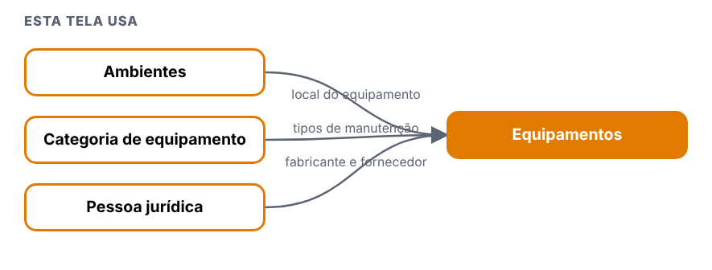
| Tela | Relação | Para quê | Situação |
|---|---|---|---|
| Ambientes | esta tela usa | local do equipamento | visto |
| Categoria de equipamento | esta tela usa | tipos de manutenção | visto |
| Pessoa jurídica | esta tela usa | fabricante e fornecedor | visto |
4. Erros: Equipamentos
| Defeito | Gravidade | O que acontece |
|---|---|---|
| DV-PRI-N-013 | Alta | Ao salvar a edição, o Valor é multiplicado por 10 a cada vez (o formulário mostra 1500.5 e envia 15005). Dado corrompido sem aviso. |
| DV-PRI-N-020 | Média | Fabricante é obrigatório de fato, mas não marcado; mensagem do servidor fala em "Outros" e some da tela. Data de fabricação futura (2031) é aceita. |
| DV-PRI-N-007 | Alta | Excluir sem justificativa. |
5. Onde melhorar: Equipamentos
- Corrigir a conversão do Valor (separador decimal) entre formulário e API (N-013).
- Marcar o fabricante como obrigatório e mostrar a mensagem (N-020); recusar data de fabricação futura.
- Pedir justificativa na exclusão (N-007).
Pontos de água
Menu: Cadastros · Situação na versão nova: Testada
1. Manual: Pontos de água
O que a tela faz
Tela do menu Cadastros que abre com lista e pesquisa na versão nova. Um ponto de água de teste (T.PONTO AGUA DEP, id 12) foi usado só para testar a exclusão de ambiente.
- Botões: Incluir sim, Excel sim, Imprimir sim. Histórico (Log): sim.
- Campos obrigatórios (marcados com asterisco): Descrição, Tipo de água.
- Tag única.
- Legado: Não testada.
Antes de começar (preparo do teste)
- Usuário com a função da tela no perfil (
[usuário de teste], que cobre Administração e Cadastros). - Registros novos começam por
T.; dados ficam no ambiente. - Todo registro novo começa com
T.(se o ponto falhar, useT-e anote o campo). - Dados de teste ficam no ambiente: não apague o que não criou.
Como usar, passo a passo
| # | O que fazer | O que deve aparecer | Caso do plano |
|---|---|---|---|
| 1 | Entrar com um usuário que tenha o perfil 0.T.TESTE_ADMIN ou 0.T.TESTE_CADASTRO e abrir o menu da tela. |
A lista abre com pesquisa. Anote se há os botões Incluir, Excel e Imprimir. | — |
| 2 | Clicar em Incluir e salvar sem preencher nada. Repetir deixando em branco os campos marcados com asterisco, um de cada vez. | Cada tentativa é recusada com mensagem clara, antes de gravar. Anote a mensagem de cada campo. | R3-PA-01, R3-PA-02 |
| 3 | Preencher só o obrigatório, com nome começando por T., e salvar. Depois incluir outro, completo. Testar os limites de tamanho que a tela mostrar (passar do tamanho e digitar letras onde é número). |
Grava, aparece na lista e o histórico mostra a inclusão. Anote o que a tela corta ou recusa. | R3-PA-02, R3-PA-03 |
| 4 | Incluir de novo o mesmo código ou nome. | Recusa duplicado, ou aceita? Anote (no legado, descrições repetidas eram aceitas em alguns cadastros). | R3-PA-04 |
| 5 | Alterar um campo sem justificativa e depois com justificativa. | Anote se a justificativa é pedida e se o histórico mostra campo, valor antigo, valor novo, usuário, data e justificativa. | R3-PA-05 |
| 6 | Inativar o registro (com justificativa) e abrir a tela que usa esse cadastro, se houver. | O registro inativo não aparece para novas escolhas; os antigos continuam mostrando o valor. | R3-PA-06 |
| 7 | Excluir um registro recém-criado, sem uso. Depois tentar excluir um que esteja ligado a outro cadastro. | O sem uso é excluído (anote se pediu justificativa); o ligado é recusado informando a dependência. | R3-PA-07 |
| 8 | Pesquisar por parte do nome, com e sem acento, em maiúsculas e minúsculas. | Encontra. No legado e em outras telas novas, a pesquisa não ignora acento (DV-PRI-008): anote. | R3-PA-08 |
| 9 | Gerar o Excel e o Imprimir com um filtro ativo. | Mesmo conteúdo da lista filtrada. | R3-PA-09, R3-PA-10 |
2. Regras de negócio: Pontos de água
Regras que a tela mostrou nos testes. A classe compara com o sistema entregue: Igual, Regressão (piorou), Melhoria, Novo (sem resultado no sistema entregue) ou Bloqueado.
| Caso | Cenário | Legado | Versão nova (o que a tela mostrou) | Classe | Defeito |
|---|---|---|---|---|---|
| R3-PA-01 | Obrigatórios | mensagem por campo, antes da pergunta de confirmação | Vazio: "A Descrição é obrigatória." e "O Tipo de Água é obrigatório." (mais o aviso "Preencha os campos obrigatórios antes de salvar."); um a um, cada campo dá a sua mensagem antes da pergunta de confirmação | Melhoria | — |
| R3-PA-02 | Incluir só o obrigatório e completo | não testada no legado | Só descrição e tipo: grava ("Inclusão realizada com sucesso."), ambiente e tag ficam vazios. Completo (tag, tipo Purificada, ambiente): grava e a lista mostra a tag | Novo | — |
| R3-PA-03 | Limites | não testada no legado | Descrição passa de 255? O campo corta em 255 sem avisar; tag corta em 30. Tag repetida: "TAG ja cadastrada!" (tag única, sem acento) | Novo | N-027 |
| R3-PA-04 | Duplicado | DV-PRI-007 | Duas descrições iguais "T. PONTO AGUA MINIMO" foram aceitas | Igual | — |
| R3-PA-05 | Alterar | o legado mostrava a justificativa no histórico | Sem justificativa: "A Justificativa é obrigatória." (campo na própria tela). Com justificativa: pergunta e "Alteração realizada com sucesso." Log: DESCRICAO antigo e novo, usuário, data e hora; justificativa não aparece | Regressão | N-029 |
| R3-PA-06 | Inativar | não testada no legado | Exige justificativa; lista passa a "NÃO"; Log "ATIVO SIM → NAO" (sem acento). Inativar um ponto ligado a ambiente é aceito (reativei depois) | Novo | — |
| R3-PA-07 | Excluir sem uso e ligado a ambiente | DV-PRI-009, N-007 | Pergunta "Confirma a exclusão do ponto do item?" (erro de texto). Sem campo de justificativa (a API recebe {}); exclui (204) tanto o sem uso quanto o ligado a ambiente |
Igual | N-027 |
| R3-PA-08 | Pesquisa | DV-PRI-008 | "AGUA" acha "AGUAS DO RIO 2" mas não acha "ÁGUAS DO RIO" nem "T. PONTO AGUA COMPLETO ÁGUA"; "água" e "ÁGUA" acham os acentuados | Igual | — |
| R3-PA-09 | Excel | não testada no legado | Respeita o filtro (2 linhas, igual à lista); colunas Código, Tag, Descrição, Ativo, Tipo de Água, Ambiente, datas e usuários de criação e alteração | Novo | — |
| R3-PA-10 | Imprimir | não testada no legado | PDF de 1 página, 200: "RELATÓRIO DE PONTOS DE ÁGUA", filtro, data e usuário; traz "SUA LOGO AQUI" no cabeçalho (ver seção 5) | Novo | N-028 |
3. Integração: Pontos de água
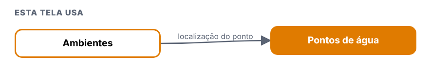
| Tela | Relação | Para quê | Situação |
|---|---|---|---|
| Ambientes | esta tela usa | localização do ponto | visto |
4. Erros: Pontos de água
| Defeito | Gravidade | O que acontece |
|---|---|---|
| DV-PRI-N-027 | Baixa | Textos: "Exclusão realizada com sucesso!" (código HTML à mostra, Utilidades); "A justificativa é; obrigatória." (Instrumentos); "Confirma a exclusão do ponto do item?" (Pontos de água); "NãO" (Conta gerencial); título "RELATÓRIO DE ENTRADA" (PDF de Grupo); botão Excel com rótulo "X" (Instrumentos e Utensílios); mensagens do servidor sem acento ("Ja existe", "nao", "fabricacao"); "ATIVO SIM → NAO" no histórico |
| DV-PRI-N-029 | Alta | O histórico (Log) não mostra a justificativa digitada, em 8 das 10 telas de cadastro (Pontos de água, Utilidades, Utensílios, Categoria, Local físico, Conta gerencial, Grupo, Funções; também em Notificações padrão, que nem pede). A justificativa é gravada (a API de log a devolve); só a tela esconde. Aparece em Instrumentos e Conta contábil |
| DV-PRI-N-028 | Média | Todos os PDF de Imprimir trazem "SUA LOGO AQUI" no lugar da logomarca e "Laboratório Farmacêutico" no lugar do nome da empresa |
5. Onde melhorar: Pontos de água
- N-027: Textos corretos.
- N-029: Mostrar quem, quando, o que mudou e por quê.
- N-028: Cabeçalho oficial com o nome da empresa.
Instrumentos
Menu: Cadastros · Situação na versão nova: Testada
1. Manual: Instrumentos
O que a tela faz
Tela do menu Cadastros que abre com lista e pesquisa na versão nova.
- Botões: Incluir sim, Excel sim, com o rótulo "X", Imprimir sim. Histórico (Log): sim.
- Campos obrigatórios (marcados com asterisco): Descrição, Tag, Tipo (já vem "Móvel"), Ativo (já vem "Sim").
- Tag única; árvore de estrutura funcional.
- Legado: Não testada.
Antes de começar (preparo do teste)
- Usuário com a função da tela no perfil (
[usuário de teste], que cobre Administração e Cadastros). - Registros novos começam por
T.; dados ficam no ambiente. - Todo registro novo começa com
T.(se o ponto falhar, useT-e anote o campo). - Dados de teste ficam no ambiente: não apague o que não criou.
Como usar, passo a passo
| # | O que fazer | O que deve aparecer | Caso do plano |
|---|---|---|---|
| 1 | Entrar com um usuário que tenha o perfil 0.T.TESTE_ADMIN ou 0.T.TESTE_CADASTRO e abrir o menu da tela. |
A lista abre com pesquisa. Anote se há os botões Incluir, Excel e Imprimir. | — |
| 2 | Clicar em Incluir e salvar sem preencher nada. Repetir deixando em branco os campos marcados com asterisco, um de cada vez. | Cada tentativa é recusada com mensagem clara, antes de gravar. Anote a mensagem de cada campo. | R3-IN-01, R3-IN-02 |
| 3 | Preencher só o obrigatório, com nome começando por T., e salvar. Depois incluir outro, completo. Testar os limites de tamanho que a tela mostrar (passar do tamanho e digitar letras onde é número). |
Grava, aparece na lista e o histórico mostra a inclusão. Anote o que a tela corta ou recusa. | R3-IN-02, R3-IN-03 |
| 4 | Incluir de novo o mesmo código ou nome. | Recusa duplicado, ou aceita? Anote (no legado, descrições repetidas eram aceitas em alguns cadastros). | R3-IN-05 |
| 5 | Alterar um campo sem justificativa e depois com justificativa. | Anote se a justificativa é pedida e se o histórico mostra campo, valor antigo, valor novo, usuário, data e justificativa. | R3-IN-06 |
| 6 | Inativar o registro (com justificativa) e abrir a tela que usa esse cadastro, se houver. | O registro inativo não aparece para novas escolhas; os antigos continuam mostrando o valor. | R3-IN-07 |
| 7 | Excluir um registro recém-criado, sem uso. Depois tentar excluir um que esteja ligado a outro cadastro. | O sem uso é excluído (anote se pediu justificativa); o ligado é recusado informando a dependência. | R3-IN-08 |
| 8 | Pesquisar por parte do nome, com e sem acento, em maiúsculas e minúsculas. | Encontra. No legado e em outras telas novas, a pesquisa não ignora acento (DV-PRI-008): anote. | R3-IN-09 |
| 9 | Gerar o Excel e o Imprimir com um filtro ativo. | Mesmo conteúdo da lista filtrada. | R3-IN-10, R3-IN-11 |
2. Regras de negócio: Instrumentos
Regras que a tela mostrou nos testes. A classe compara com o sistema entregue: Igual, Regressão (piorou), Melhoria, Novo (sem resultado no sistema entregue) ou Bloqueado.
| Caso | Cenário | Legado | Versão nova (o que a tela mostrou) | Classe | Defeito |
|---|---|---|---|---|---|
| R3-IN-01 | Obrigatórios | não testada no legado | Vazio: "A descrição é obrigatória." e "A tag é obrigatória." (um a um, cada um com a sua). Tipo e Ativo já vêm marcados (Móvel e Sim): gravar sem escolher grava "Móvel" | Melhoria | — |
| R3-IN-02 | Incluir só o obrigatório e completo | não testada no legado | Descrição e tag: grava. Completo (patrimônio, modelo, série, datas, fabricante, fornecedor): grava. Fabricante não é obrigatório aqui (é em Utilidades e Utensílios) | Novo | N-033 |
| R3-IN-03 | Limites e tag única | N-022 | Descrição 255 grava; 256 ou mais: "A descrição é obrigatória." (mensagem enganosa). Tag 30 grava; 31 ou mais: só o aviso geral, sem dizer o campo. Tag repetida: "Tag ja existe!" | Igual | N-022, N-027 |
| R3-IN-04 | Datas | não testada no legado | Fabricação futura (2031): "A data de fabricacao nao pode ser maior que a data atual." (recusa; o Equipamento aceita, N-020). Fim antes do início: "A data de inicio de operacao nao pode ser maior que a data de fim de operacao." Início antes da fabricação: aceito (ponto para validar) | Melhoria | — |
| R3-IN-05 | Duplicado (descrição) | DV-PRI-007 | Mesma descrição com outra tag: aceita | Igual | — |
| R3-IN-06 | Alterar | único cadastro, junto com Conta contábil, em que o histórico traz a justificativa | Sem justificativa: "A justificativa é; obrigatória." (ponto e vírgula no meio do texto). Com justificativa: grava. Log mostra o campo, o valor antigo e novo, usuário, data e hora e a linha "Justificativa: ..." | Melhoria | N-027 |
| R3-IN-07 | Inativar | não testada no legado | Exige justificativa; lista "NÃO"; Log "ATIVO SIM → NAO" com a justificativa | Novo | — |
| R3-IN-08 | Excluir sem uso | DV-PRI-009, N-007 | "Confirma a exclusão do item?", sem campo de justificativa; 204 e "Exclusão realizada com sucesso." Excluir com uso: não há outra tela do Principal que use o instrumento (não conferido nos outros módulos) | Igual | — |
| R3-IN-09 | Pesquisa | DV-PRI-008, não reproduzido nesta tela | "INSTRUMENTO" e "instrumento" acham; sem acento não foi possível comparar (os instrumentos de teste não têm acento) | Igual | — |
| R3-IN-10 | Excel | não testada no legado | O botão chama-se "X" (não "EXCEL"); baixa instrumentos_...xlsx, respeita o filtro (1 linha) e traz o tipo (MOVEL) |
Novo | N-027 |
| R3-IN-11 | Imprimir | não testada no legado | PDF "RELATÓRIO DE CADASTRO DE INSTRUMENTOS", respeita o filtro ("Descrição: T. INSTRUMENTO"); "SUA LOGO AQUI" | Novo | N-028 |
3. Integração: Instrumentos
| Tela | Relação | Para quê | Situação |
|---|---|---|---|
| Estrutura funcional (Locais) | esta tela usa | árvore de estrutura | visto |
4. Erros: Instrumentos
| Defeito | Gravidade | O que acontece |
|---|---|---|
| DV-PRI-N-033 | Média | Obrigatórios e inativos sem padrão: Utensílios e Grupo deixam passar um obrigatório que só o servidor recusa (com texto genérico); Local físico e Conta gerencial só dizem "preencha os campos" sem apontar o campo; "Ativo", "Operação" e "Tipo" valem sem escolher (assumem Sim, Depreciação e Sintética); função inativa aparece sem nome no Profissional e grupo inativo continua na lista de escolha |
| DV-PRI-N-027 | Baixa | Textos: "Exclusão realizada com sucesso!" (código HTML à mostra, Utilidades); "A justificativa é; obrigatória." (Instrumentos); "Confirma a exclusão do ponto do item?" (Pontos de água); "NãO" (Conta gerencial); título "RELATÓRIO DE ENTRADA" (PDF de Grupo); botão Excel com rótulo "X" (Instrumentos e Utensílios); mensagens do servidor sem acento ("Ja existe", "nao", "fabricacao"); "ATIVO SIM → NAO" no histórico |
| DV-PRI-N-028 | Média | Todos os PDF de Imprimir trazem "SUA LOGO AQUI" no lugar da logomarca e "Laboratório Farmacêutico" no lugar do nome da empresa |
5. Onde melhorar: Instrumentos
- N-033: Mesmo padrão em todas as telas.
- N-027: Textos corretos.
- N-028: Cabeçalho oficial com o nome da empresa.
Utilidades
Menu: Cadastros · Situação na versão nova: Testada
1. Manual: Utilidades
O que a tela faz
Tela do menu Cadastros que abre com lista e pesquisa na versão nova.
- Botões: Incluir sim, Excel sim, Imprimir sim. Histórico (Log): sim.
- Campos obrigatórios (marcados com asterisco): Descrição, Fabricante.
- Legado: Não testada.
Antes de começar (preparo do teste)
- Usuário com a função da tela no perfil (
[usuário de teste], que cobre Administração e Cadastros). - Registros novos começam por
T.; dados ficam no ambiente. - Todo registro novo começa com
T.(se o ponto falhar, useT-e anote o campo). - Dados de teste ficam no ambiente: não apague o que não criou.
Como usar, passo a passo
| # | O que fazer | O que deve aparecer | Caso do plano |
|---|---|---|---|
| 1 | Entrar com um usuário que tenha o perfil 0.T.TESTE_ADMIN ou 0.T.TESTE_CADASTRO e abrir o menu da tela. |
A lista abre com pesquisa. Anote se há os botões Incluir, Excel e Imprimir. | — |
| 2 | Clicar em Incluir e salvar sem preencher nada. Repetir deixando em branco os campos marcados com asterisco, um de cada vez. | Cada tentativa é recusada com mensagem clara, antes de gravar. Anote a mensagem de cada campo. | R3-UT-01, R3-UT-02 |
| 3 | Preencher só o obrigatório, com nome começando por T., e salvar. Depois incluir outro, completo. Testar os limites de tamanho que a tela mostrar (passar do tamanho e digitar letras onde é número). |
Grava, aparece na lista e o histórico mostra a inclusão. Anote o que a tela corta ou recusa. | R3-UT-02, R3-UT-03 |
| 4 | Incluir de novo o mesmo código ou nome. | Recusa duplicado, ou aceita? Anote (no legado, descrições repetidas eram aceitas em alguns cadastros). | R3-UT-05 |
| 5 | Alterar um campo sem justificativa e depois com justificativa. | Anote se a justificativa é pedida e se o histórico mostra campo, valor antigo, valor novo, usuário, data e justificativa. | R3-UT-06 |
| 6 | Inativar o registro (com justificativa) e abrir a tela que usa esse cadastro, se houver. | O registro inativo não aparece para novas escolhas; os antigos continuam mostrando o valor. | R3-UT-07 |
| 7 | Excluir um registro recém-criado, sem uso. Depois tentar excluir um que esteja ligado a outro cadastro. | O sem uso é excluído (anote se pediu justificativa); o ligado é recusado informando a dependência. | R3-UT-08 |
| 8 | Pesquisar por parte do nome, com e sem acento, em maiúsculas e minúsculas. | Encontra. No legado e em outras telas novas, a pesquisa não ignora acento (DV-PRI-008): anote. | R3-UT-09 |
| 9 | Gerar o Excel e o Imprimir com um filtro ativo. | Mesmo conteúdo da lista filtrada. | R3-UT-10 |
2. Regras de negócio: Utilidades
Regras que a tela mostrou nos testes. A classe compara com o sistema entregue: Igual, Regressão (piorou), Melhoria, Novo (sem resultado no sistema entregue) ou Bloqueado.
| Caso | Cenário | Legado | Versão nova (o que a tela mostrou) | Classe | Defeito |
|---|---|---|---|---|---|
| R3-UT-01 | Obrigatórios | não testada no legado | "A descrição é obrigatória." e "O fabricante é obrigatório." (um a um) | Melhoria | — |
| R3-UT-02 | Incluir só o obrigatório e completo | não testada no legado | Descrição e fabricante: grava ("Inclusão realizada com sucesso!"). Completo (tag, patrimônio, modelo, série, datas, fornecedor): grava | Novo | — |
| R3-UT-03 | Limites | N-022 | Descrição 255 grava; 256 e 1000: "A descrição é obrigatória." (enganosa). Tag 30 grava; 31 e mais: só o aviso geral | Igual | N-022 |
| R3-UT-04 | Datas | não testada no legado | Fabricação futura: "A data de fabricação não pode ser maior que a data atual."; fim antes do início: "A data de início de operação não pode ser maior que a data de fim de operação."; início antes da fabricação: aceito | Melhoria | — |
| R3-UT-05 | Duplicado | DV-PRI-007 | Duas "T. UTILIDADE MINIMA" aceitas | Igual | — |
| R3-UT-06 | Alterar | não testada no legado | Sem justificativa: "A justificativa é obrigatória."; com justificativa grava. Log: valores, usuário, data e hora; sem justificativa na tela (a API devolve a justificativa de cada alteração) | Regressão | N-029 |
| R3-UT-07 | Inativar | não testada no legado | Exige justificativa; lista "NÃO" | Novo | — |
| R3-UT-08 | Excluir | DV-PRI-009, N-007 | O modal traz o campo "Justificativa" sem ser obrigatório (a API recebe ""); exclui (204). A mensagem de sucesso aparece como "Exclusão realizada com sucesso!" (código HTML à mostra) |
Igual | N-027 |
| R3-UT-09 | Pesquisa | DV-PRI-008 | "AGUA" não acha "T. UTILIDADE COMPLETA ÁGUA"; "água" acha | Igual | — |
| R3-UT-10 | Excel e Imprimir | não testada no legado | Excel: utilidades.xlsx, respeita o filtro (4 linhas = lista); PDF "RELATÓRIO DE CADASTRO DE UTILIDADES", filtro "DESCRIÇÃO: T. UTILIDADE", "SUA LOGO AQUI" |
Novo | N-028 |
3. Integração: Utilidades
| Tela | Relação | Para quê | Situação |
|---|---|---|---|
| Pessoa jurídica | esta tela usa | fabricante | a validar |
4. Erros: Utilidades
| Defeito | Gravidade | O que acontece |
|---|---|---|
| DV-PRI-N-029 | Alta | O histórico (Log) não mostra a justificativa digitada, em 8 das 10 telas de cadastro (Pontos de água, Utilidades, Utensílios, Categoria, Local físico, Conta gerencial, Grupo, Funções; também em Notificações padrão, que nem pede). A justificativa é gravada (a API de log a devolve); só a tela esconde. Aparece em Instrumentos e Conta contábil |
| DV-PRI-N-027 | Baixa | Textos: "Exclusão realizada com sucesso!" (código HTML à mostra, Utilidades); "A justificativa é; obrigatória." (Instrumentos); "Confirma a exclusão do ponto do item?" (Pontos de água); "NãO" (Conta gerencial); título "RELATÓRIO DE ENTRADA" (PDF de Grupo); botão Excel com rótulo "X" (Instrumentos e Utensílios); mensagens do servidor sem acento ("Ja existe", "nao", "fabricacao"); "ATIVO SIM → NAO" no histórico |
| DV-PRI-N-028 | Média | Todos os PDF de Imprimir trazem "SUA LOGO AQUI" no lugar da logomarca e "Laboratório Farmacêutico" no lugar do nome da empresa |
5. Onde melhorar: Utilidades
- N-029: Mostrar quem, quando, o que mudou e por quê.
- N-027: Textos corretos.
- N-028: Cabeçalho oficial com o nome da empresa.
Utensílios
Menu: Cadastros · Situação na versão nova: Testada
1. Manual: Utensílios
O que a tela faz
Tela do menu Cadastros que abre com lista e pesquisa na versão nova.
- Botões: Incluir sim, Excel sim, com o rótulo "X", Imprimir sim. Histórico (Log): sim.
- Campos obrigatórios (marcados com asterisco): Descrição, Fabricante (só o servidor confere).
- Legado: Não testada.
Antes de começar (preparo do teste)
- Usuário com a função da tela no perfil (
[usuário de teste], que cobre Administração e Cadastros). - Registros novos começam por
T.; dados ficam no ambiente. - Todo registro novo começa com
T.(se o ponto falhar, useT-e anote o campo). - Dados de teste ficam no ambiente: não apague o que não criou.
Como usar, passo a passo
| # | O que fazer | O que deve aparecer | Caso do plano |
|---|---|---|---|
| 1 | Entrar com um usuário que tenha o perfil 0.T.TESTE_ADMIN ou 0.T.TESTE_CADASTRO e abrir o menu da tela. |
A lista abre com pesquisa. Anote se há os botões Incluir, Excel e Imprimir. | — |
| 2 | Clicar em Incluir e salvar sem preencher nada. Repetir deixando em branco os campos marcados com asterisco, um de cada vez. | Cada tentativa é recusada com mensagem clara, antes de gravar. Anote a mensagem de cada campo. | R3-UE-01 |
| 3 | Preencher só o obrigatório, com nome começando por T., e salvar. Depois incluir outro, completo. Testar os limites de tamanho que a tela mostrar (passar do tamanho e digitar letras onde é número). |
Grava, aparece na lista e o histórico mostra a inclusão. Anote o que a tela corta ou recusa. | R3-UE-02, R3-UE-03 |
| 4 | Incluir de novo o mesmo código ou nome. | Recusa duplicado, ou aceita? Anote (no legado, descrições repetidas eram aceitas em alguns cadastros). | R3-UE-04 |
| 5 | Alterar um campo sem justificativa e depois com justificativa. | Anote se a justificativa é pedida e se o histórico mostra campo, valor antigo, valor novo, usuário, data e justificativa. | R3-UE-05 |
| 6 | Inativar o registro (com justificativa) e abrir a tela que usa esse cadastro, se houver. | O registro inativo não aparece para novas escolhas; os antigos continuam mostrando o valor. | R3-UE-05 |
| 7 | Excluir um registro recém-criado, sem uso. Depois tentar excluir um que esteja ligado a outro cadastro. | O sem uso é excluído (anote se pediu justificativa); o ligado é recusado informando a dependência. | R3-UE-06 |
| 8 | Pesquisar por parte do nome, com e sem acento, em maiúsculas e minúsculas. | Encontra. No legado e em outras telas novas, a pesquisa não ignora acento (DV-PRI-008): anote. | R3-UE-07 |
| 9 | Gerar o Excel e o Imprimir com um filtro ativo. | Mesmo conteúdo da lista filtrada. | R3-UE-08, R3-UE-09 |
2. Regras de negócio: Utensílios
Regras que a tela mostrou nos testes. A classe compara com o sistema entregue: Igual, Regressão (piorou), Melhoria, Novo (sem resultado no sistema entregue) ou Bloqueado.
| Caso | Cenário | Legado | Versão nova (o que a tela mostrou) | Classe | Defeito |
|---|---|---|---|---|---|
| R3-UE-01 | Obrigatórios | Utilidades confere na tela | "A descrição é obrigatória." (cliente). Fabricante é marcado como obrigatório mas a tela deixa passar: o servidor recusa (400) com "Não foi possível salvar o utensílio." (nada diz que falta o fabricante) | Regressão | N-033 |
| R3-UE-02 | Incluir | não testada no legado | Mínimo (descrição e fabricante) e completo gravam | Novo | — |
| R3-UE-03 | Limites e datas | N-022 | Descrição 255 grava, 256 e 1000: "A descrição é obrigatória."; tag 30 grava, 31: aviso geral. Datas: mensagens sem acento ("A data de fabricacao nao pode ser maior que a data atual."); início antes da fabricação aceito | Igual | N-022, N-027 |
| R3-UE-04 | Duplicado | DV-PRI-007 | Duas "T. UTENSILIO MINIMO" aceitas | Igual | — |
| R3-UE-05 | Alterar e inativar | não testada no legado | Sem justificativa: "A justificativa é obrigatória."; com justificativa grava; histórico sem a justificativa | Regressão | N-029 |
| R3-UE-06 | Excluir | DV-PRI-009, N-007 | "Confirma a exclusão do item?", sem campo de justificativa (API recebe ""); exclui (204) |
Igual | — |
| R3-UE-07 | Pesquisa | DV-PRI-008 | "AGUA" não acha "ÁGUA"; "água" acha | Igual | — |
| R3-UE-08 | Excel | não testada no legado | O botão chama-se "X"; o arquivo traz os 9 utensílios, e a lista filtrada tinha 2: o filtro é ignorado | Novo | N-025, N-027 |
| R3-UE-09 | Imprimir | não testada no legado | O PDF diz "FILTRO: EXIBIR TUDO" e lista todos os utensílios, com a lista filtrada em 2; "SUA LOGO AQUI" | Novo | N-025, N-028 |
3. Integração: Utensílios
| Tela | Relação | Para quê | Situação |
|---|---|---|---|
| Pessoa jurídica | esta tela usa | fabricante | a validar |
4. Erros: Utensílios
| Defeito | Gravidade | O que acontece |
|---|---|---|
| DV-PRI-N-033 | Média | Obrigatórios e inativos sem padrão: Utensílios e Grupo deixam passar um obrigatório que só o servidor recusa (com texto genérico); Local físico e Conta gerencial só dizem "preencha os campos" sem apontar o campo; "Ativo", "Operação" e "Tipo" valem sem escolher (assumem Sim, Depreciação e Sintética); função inativa aparece sem nome no Profissional e grupo inativo continua na lista de escolha |
| DV-PRI-N-027 | Baixa | Textos: "Exclusão realizada com sucesso!" (código HTML à mostra, Utilidades); "A justificativa é; obrigatória." (Instrumentos); "Confirma a exclusão do ponto do item?" (Pontos de água); "NãO" (Conta gerencial); título "RELATÓRIO DE ENTRADA" (PDF de Grupo); botão Excel com rótulo "X" (Instrumentos e Utensílios); mensagens do servidor sem acento ("Ja existe", "nao", "fabricacao"); "ATIVO SIM → NAO" no histórico |
| DV-PRI-N-029 | Alta | O histórico (Log) não mostra a justificativa digitada, em 8 das 10 telas de cadastro (Pontos de água, Utilidades, Utensílios, Categoria, Local físico, Conta gerencial, Grupo, Funções; também em Notificações padrão, que nem pede). A justificativa é gravada (a API de log a devolve); só a tela esconde. Aparece em Instrumentos e Conta contábil |
| DV-PRI-N-025 | Média | O Excel de Grupo de usuários e o Excel e o Imprimir de Utensílios ignoram o filtro da tela (trazem todos os registros; o PDF de Utensílios diz "FILTRO: EXIBIR TUDO") |
| DV-PRI-N-028 | Média | Todos os PDF de Imprimir trazem "SUA LOGO AQUI" no lugar da logomarca e "Laboratório Farmacêutico" no lugar do nome da empresa |
5. Onde melhorar: Utensílios
- N-033: Mesmo padrão em todas as telas.
- N-027: Textos corretos.
- N-029: Mostrar quem, quando, o que mudou e por quê.
- N-025: Mesmo conteúdo da lista filtrada.
- N-028: Cabeçalho oficial com o nome da empresa.
Categoria de equipamento
Menu: Cadastros · Situação na versão nova: Testada
1. Manual: Categoria de equipamento
O que a tela faz
Tela do menu Cadastros que abre com lista e pesquisa na versão nova.
- Botões: Incluir sim, Excel sim, Imprimir sim. Histórico (Log): sim.
- Campos obrigatórios (marcados com asterisco): Descrição, ao menos um tipo de manutenção.
- Descrição única.
- Legado: Não testada.
Antes de começar (preparo do teste)
- Usuário com a função da tela no perfil (
[usuário de teste], que cobre Administração e Cadastros). - Registros novos começam por
T.; dados ficam no ambiente. - Todo registro novo começa com
T.(se o ponto falhar, useT-e anote o campo). - Dados de teste ficam no ambiente: não apague o que não criou.
Como usar, passo a passo
| # | O que fazer | O que deve aparecer | Caso do plano |
|---|---|---|---|
| 1 | Entrar com um usuário que tenha o perfil 0.T.TESTE_ADMIN ou 0.T.TESTE_CADASTRO e abrir o menu da tela. |
A lista abre com pesquisa. Anote se há os botões Incluir, Excel e Imprimir. | — |
| 2 | Clicar em Incluir e salvar sem preencher nada. Repetir deixando em branco os campos marcados com asterisco, um de cada vez. | Cada tentativa é recusada com mensagem clara, antes de gravar. Anote a mensagem de cada campo. | R3-CE-01 |
| 3 | Preencher só o obrigatório, com nome começando por T., e salvar. Depois incluir outro, completo. Testar os limites de tamanho que a tela mostrar (passar do tamanho e digitar letras onde é número). |
Grava, aparece na lista e o histórico mostra a inclusão. Anote o que a tela corta ou recusa. | R3-CE-02, R3-CE-03 |
| 4 | Incluir de novo o mesmo código ou nome. | Recusa duplicado, ou aceita? Anote (no legado, descrições repetidas eram aceitas em alguns cadastros). | R3-CE-03 |
| 5 | Alterar um campo sem justificativa e depois com justificativa. | Anote se a justificativa é pedida e se o histórico mostra campo, valor antigo, valor novo, usuário, data e justificativa. | R3-CE-04 |
| 6 | Inativar o registro (com justificativa) e abrir a tela que usa esse cadastro, se houver. | O registro inativo não aparece para novas escolhas; os antigos continuam mostrando o valor. | R3-CE-05 |
| 7 | Excluir um registro recém-criado, sem uso. Depois tentar excluir um que esteja ligado a outro cadastro. | O sem uso é excluído (anote se pediu justificativa); o ligado é recusado informando a dependência. | R3-CE-06, R3-CE-07 |
| 8 | Pesquisar por parte do nome, com e sem acento, em maiúsculas e minúsculas. | Encontra. No legado e em outras telas novas, a pesquisa não ignora acento (DV-PRI-008): anote. | R3-CE-08 |
| 9 | Gerar o Excel e o Imprimir com um filtro ativo. | Mesmo conteúdo da lista filtrada. | R3-CE-09 |
2. Regras de negócio: Categoria de equipamento
Regras que a tela mostrou nos testes. A classe compara com o sistema entregue: Igual, Regressão (piorou), Melhoria, Novo (sem resultado no sistema entregue) ou Bloqueado.
| Caso | Cenário | Legado | Versão nova (o que a tela mostrou) | Classe | Defeito |
|---|---|---|---|---|---|
| R3-CE-01 | Obrigatórios | não testada no legado | Vazio: "Descrição é obrigatória e deve ter no máximo 100 caracteres." Sem tipo de manutenção: "Selecione ao menos um tipo de manutenção." (regra nova: pelo menos 1 dos 5 tipos) | Novo | — |
| R3-CE-02 | Incluir | não testada no legado | Mínimo (descrição e 1 tipo) e completo (2 tipos) gravam | Novo | — |
| R3-CE-03 | Limites e duplicado | o legado não recusava repetidos, DV-PRI-007 | Descrição corta em 100 sem avisar. Descrição repetida é recusada: "Ja existe categoria de equipamento com esta descricao." | Melhoria | N-027 |
| R3-CE-04 | Alterar | não testada no legado | Sem justificativa: "Justificativa é obrigatória e deve ter no máximo 255 caracteres."; com justificativa grava; histórico sem justificativa | Regressão | N-029 |
| R3-CE-05 | Inativar | não testada no legado | Exige justificativa. Categoria com equipamento ativo não pode ser inativada: "A Categoria possui equipamentos ativos. Nao e possivel inativar!" | Melhoria | — |
| R3-CE-06 | Excluir sem uso | legado: DV-PRI-009, sem justificativa | Exige justificativa ("A justificativa é obrigatória e deve ter no máximo 255 caracteres."); com justificativa: 204 e "Exclusão realizada com sucesso." | Melhoria | — |
| R3-CE-07 | Excluir com uso | o legado, mesmo genérico, avisava, DV-PRI-011 | A API recusa (400) "A Categoria possui equipamentos ativos. Nao e possivel excluir!", mas a tela não mostra nada: a pergunta fecha e a categoria continua na lista | Regressão | N-024 |
| R3-CE-08 | Pesquisa | DV-PRI-008 | "AGUA" não acha; "água" e "ÁGUA" acham | Igual | — |
| R3-CE-09 | Excel e Imprimir | não testada no legado | Excel respeita o filtro (colunas extras: Fixo, Tipos de manutenção, exclusão); PDF "RELATÓRIO DE CATEGORIA DE EQUIPAMENTO", "SUA LOGO AQUI" | Novo | N-028 |
3. Integração: Categoria de equipamento
| Tela | Relação | Para quê | Situação |
|---|---|---|---|
| Equipamentos | usa esta tela | tipos de manutenção | visto |
4. Erros: Categoria de equipamento
| Defeito | Gravidade | O que acontece |
|---|---|---|
| DV-PRI-N-027 | Baixa | Textos: "Exclusão realizada com sucesso!" (código HTML à mostra, Utilidades); "A justificativa é; obrigatória." (Instrumentos); "Confirma a exclusão do ponto do item?" (Pontos de água); "NãO" (Conta gerencial); título "RELATÓRIO DE ENTRADA" (PDF de Grupo); botão Excel com rótulo "X" (Instrumentos e Utensílios); mensagens do servidor sem acento ("Ja existe", "nao", "fabricacao"); "ATIVO SIM → NAO" no histórico |
| DV-PRI-N-029 | Alta | O histórico (Log) não mostra a justificativa digitada, em 8 das 10 telas de cadastro (Pontos de água, Utilidades, Utensílios, Categoria, Local físico, Conta gerencial, Grupo, Funções; também em Notificações padrão, que nem pede). A justificativa é gravada (a API de log a devolve); só a tela esconde. Aparece em Instrumentos e Conta contábil |
| DV-PRI-N-024 | Média | Exclusão recusada sem mensagem: Categoria de equipamento e Grupo de usuários em uso (a API diz o motivo, a tela só fecha a pergunta) e Conta gerencial sem justificativa (a pergunta não faz nada) |
| DV-PRI-N-028 | Média | Todos os PDF de Imprimir trazem "SUA LOGO AQUI" no lugar da logomarca e "Laboratório Farmacêutico" no lugar do nome da empresa |
5. Onde melhorar: Categoria de equipamento
- N-027: Textos corretos.
- N-029: Mostrar quem, quando, o que mudou e por quê.
- N-024: Mostrar o motivo e deixar o usuário tentar de novo.
- N-028: Cabeçalho oficial com o nome da empresa.
Local físico
Menu: Cadastros · Situação na versão nova: Testada
1. Manual: Local físico
O que a tela faz
Tela do menu Cadastros que abre com lista e pesquisa na versão nova.
- Botões: Incluir sim, Excel não, Imprimir não. Histórico (Log): sim.
- Campos obrigatórios (marcados com asterisco): Nome, Empresa, Conta gerencial, Responsável, Ativo.
- Campos de busca por digitação (sugestões).
- Legado: Não testada; no legado não tem relatório.
Antes de começar (preparo do teste)
- Usuário com a função da tela no perfil (
[usuário de teste], que cobre Administração e Cadastros). - Registros novos começam por
T.; dados ficam no ambiente. - Todo registro novo começa com
T.(se o ponto falhar, useT-e anote o campo). - Dados de teste ficam no ambiente: não apague o que não criou.
Como usar, passo a passo
| # | O que fazer | O que deve aparecer | Caso do plano |
|---|---|---|---|
| 1 | Entrar com um usuário que tenha o perfil 0.T.TESTE_ADMIN ou 0.T.TESTE_CADASTRO e abrir o menu da tela. |
A lista abre com pesquisa. Anote se há os botões Incluir, Excel e Imprimir. | — |
| 2 | Clicar em Incluir e salvar sem preencher nada. Repetir deixando em branco os campos marcados com asterisco, um de cada vez. | Cada tentativa é recusada com mensagem clara, antes de gravar. Anote a mensagem de cada campo. | R3-LF-01 |
| 3 | Preencher só o obrigatório, com nome começando por T., e salvar. Depois incluir outro, completo. Testar os limites de tamanho que a tela mostrar (passar do tamanho e digitar letras onde é número). |
Grava, aparece na lista e o histórico mostra a inclusão. Anote o que a tela corta ou recusa. | R3-LF-02, R3-LF-03 |
| 4 | Incluir de novo o mesmo código ou nome. | Recusa duplicado, ou aceita? Anote (no legado, descrições repetidas eram aceitas em alguns cadastros). | R3-LF-03 |
| 5 | Alterar um campo sem justificativa e depois com justificativa. | Anote se a justificativa é pedida e se o histórico mostra campo, valor antigo, valor novo, usuário, data e justificativa. | R3-LF-04 |
| 6 | Inativar o registro (com justificativa) e abrir a tela que usa esse cadastro, se houver. | O registro inativo não aparece para novas escolhas; os antigos continuam mostrando o valor. | R3-LF-04 |
| 7 | Excluir um registro recém-criado, sem uso. Depois tentar excluir um que esteja ligado a outro cadastro. | O sem uso é excluído (anote se pediu justificativa); o ligado é recusado informando a dependência. | R3-LF-05 |
| 8 | Pesquisar por parte do nome, com e sem acento, em maiúsculas e minúsculas. | Encontra. No legado e em outras telas novas, a pesquisa não ignora acento (DV-PRI-008): anote. | R3-LF-07 |
| 9 | Gerar o Excel e o Imprimir com um filtro ativo. | Mesmo conteúdo da lista filtrada. | R3-LF-06 |
2. Regras de negócio: Local físico
Regras que a tela mostrou nos testes. A classe compara com o sistema entregue: Igual, Regressão (piorou), Melhoria, Novo (sem resultado no sistema entregue) ou Bloqueado.
| Caso | Cenário | Legado | Versão nova (o que a tela mostrou) | Classe | Defeito |
|---|---|---|---|---|---|
| R3-LF-01 | Obrigatórios | Pontos de água e Categoria dizem o campo | Vazio e um a um: só o aviso "Preencha os campos obrigatórios antes de salvar.", sem dizer qual campo (Nome, Empresa, Conta gerencial, Responsável). Ativo é marcado como obrigatório, mas gravar sem escolher grava como "Sim" | Regressão | N-033 |
| R3-LF-02 | Incluir | não testada no legado | Mínimo e completo (com Centro de custo, que é opcional) gravam; as caixas de Empresa, Conta gerencial, Centro de custo e Responsável sugerem os nomes ao digitar | Novo | — |
| R3-LF-03 | Limites e duplicado | não testada no legado | Nome 50 grava; passa disso o campo corta em 50. Nome repetido na mesma conta gerencial é recusado: "Ja existe local fisico com este nome para a conta gerencial informada." | Melhoria | N-027 |
| R3-LF-04 | Alterar e inativar | não testada no legado | Sem justificativa: "A justificativa é obrigatória."; com justificativa grava; histórico sem justificativa | Regressão | N-029 |
| R3-LF-05 | Excluir | não testada no legado | O botão SIM fica desabilitado até digitar a justificativa; depois exclui (204) | Melhoria | — |
| R3-LF-06 | Excel e Imprimir | legado: "Sem relatório" | Não existem (a lista só tem PESQUISAR e LIMPAR) | Igual | — |
| R3-LF-07 | Pesquisa | DV-PRI-008 | Por Empresa, Conta gerencial, Código, Nome e Ativo. "AGUA" não acha "T. LOCAL FISICO COMPLETO ÁGUA"; "água" e "ÁGUA" acham | Igual | — |
3. Integração: Local físico
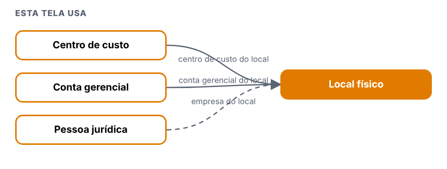
| Tela | Relação | Para quê | Situação |
|---|---|---|---|
| Centro de custo | esta tela usa | centro de custo do local | visto |
| Conta gerencial | esta tela usa | conta gerencial do local | visto |
| Pessoa jurídica | esta tela usa | empresa do local | a validar |
4. Erros: Local físico
| Defeito | Gravidade | O que acontece |
|---|---|---|
| DV-PRI-N-033 | Média | Obrigatórios e inativos sem padrão: Utensílios e Grupo deixam passar um obrigatório que só o servidor recusa (com texto genérico); Local físico e Conta gerencial só dizem "preencha os campos" sem apontar o campo; "Ativo", "Operação" e "Tipo" valem sem escolher (assumem Sim, Depreciação e Sintética); função inativa aparece sem nome no Profissional e grupo inativo continua na lista de escolha |
| DV-PRI-N-027 | Baixa | Textos: "Exclusão realizada com sucesso!" (código HTML à mostra, Utilidades); "A justificativa é; obrigatória." (Instrumentos); "Confirma a exclusão do ponto do item?" (Pontos de água); "NãO" (Conta gerencial); título "RELATÓRIO DE ENTRADA" (PDF de Grupo); botão Excel com rótulo "X" (Instrumentos e Utensílios); mensagens do servidor sem acento ("Ja existe", "nao", "fabricacao"); "ATIVO SIM → NAO" no histórico |
| DV-PRI-N-029 | Alta | O histórico (Log) não mostra a justificativa digitada, em 8 das 10 telas de cadastro (Pontos de água, Utilidades, Utensílios, Categoria, Local físico, Conta gerencial, Grupo, Funções; também em Notificações padrão, que nem pede). A justificativa é gravada (a API de log a devolve); só a tela esconde. Aparece em Instrumentos e Conta contábil |
5. Onde melhorar: Local físico
- N-033: Mesmo padrão em todas as telas.
- N-027: Textos corretos.
- N-029: Mostrar quem, quando, o que mudou e por quê.
Conta contábil
Menu: Cadastros · Situação na versão nova: Testada
1. Manual: Conta contábil
O que a tela faz
Tela do menu Cadastros que abre com lista e pesquisa na versão nova.
- Botões: Incluir sim, Excel não, Imprimir não. Histórico (Log): sim, com coluna Justificativa.
- Campos obrigatórios (marcados com asterisco): Código (formato 9.9.9.9.9.99.99), Nome, Taxa, Ativo, Operação, Tipo.
- Hierarquia (conta principal e filhas).
- Legado: Não testada; no legado não tem relatório.
Antes de começar (preparo do teste)
- Usuário com a função da tela no perfil (
[usuário de teste], que cobre Administração e Cadastros). - Registros novos começam por
T.; dados ficam no ambiente. - Todo registro novo começa com
T.(se o ponto falhar, useT-e anote o campo). - Dados de teste ficam no ambiente: não apague o que não criou.
Como usar, passo a passo
| # | O que fazer | O que deve aparecer | Caso do plano |
|---|---|---|---|
| 1 | Entrar com um usuário que tenha o perfil 0.T.TESTE_ADMIN ou 0.T.TESTE_CADASTRO e abrir o menu da tela. |
A lista abre com pesquisa. Anote se há os botões Incluir, Excel e Imprimir. | — |
| 2 | Clicar em Incluir e salvar sem preencher nada. Repetir deixando em branco os campos marcados com asterisco, um de cada vez. | Cada tentativa é recusada com mensagem clara, antes de gravar. Anote a mensagem de cada campo. | R3-CC-01 |
| 3 | Preencher só o obrigatório, com nome começando por T., e salvar. Depois incluir outro, completo. Testar os limites de tamanho que a tela mostrar (passar do tamanho e digitar letras onde é número). |
Grava, aparece na lista e o histórico mostra a inclusão. Anote o que a tela corta ou recusa. | R3-CC-04 |
| 4 | Incluir de novo o mesmo código ou nome. | Recusa duplicado, ou aceita? Anote (no legado, descrições repetidas eram aceitas em alguns cadastros). | R3-CC-03 |
| 5 | Alterar um campo sem justificativa e depois com justificativa. | Anote se a justificativa é pedida e se o histórico mostra campo, valor antigo, valor novo, usuário, data e justificativa. | R3-CC-05 |
| 6 | Inativar o registro (com justificativa) e abrir a tela que usa esse cadastro, se houver. | O registro inativo não aparece para novas escolhas; os antigos continuam mostrando o valor. | R3-CC-06 |
| 7 | Excluir um registro recém-criado, sem uso. Depois tentar excluir um que esteja ligado a outro cadastro. | O sem uso é excluído (anote se pediu justificativa); o ligado é recusado informando a dependência. | R3-CC-07 |
| 8 | Pesquisar por parte do nome, com e sem acento, em maiúsculas e minúsculas. | Encontra. No legado e em outras telas novas, a pesquisa não ignora acento (DV-PRI-008): anote. | R3-CC-09 |
| 9 | Gerar o Excel e o Imprimir com um filtro ativo. | Mesmo conteúdo da lista filtrada. | R3-CC-08 |
2. Regras de negócio: Conta contábil
Regras que a tela mostrou nos testes. A classe compara com o sistema entregue: Igual, Regressão (piorou), Melhoria, Novo (sem resultado no sistema entregue) ou Bloqueado.
| Caso | Cenário | Legado | Versão nova (o que a tela mostrou) | Classe | Defeito |
|---|---|---|---|---|---|
| R3-CC-01 | Obrigatórios | mensagens | Mensagem por campo: "O código é obrigatório e deve seguir o formato 9.9.9.9.9.99.99.", "O nome é obrigatório e deve ter no máximo 255 caracteres.", "A taxa é obrigatória e deve ser um número válido." Letras no código ou código sem máscara: a mesma mensagem. Ativo, Operação e Tipo, se não forem escolhidos, assumem sozinhos Sim, Depreciação e Sintética, sem aviso | Melhoria | — |
| R3-CC-02 | Regras de hierarquia (o servidor confere, a tela não explica) | não testada no legado | Conta sintética raiz (7.0.0.0.0.00.00, sem conta principal): grava. Analítica (1.1.1.1.1.02.90) com principal "MEDICAMENTOS NÃO CONTROLADOS": grava. Analítica sem principal: "A conta principal da conta contábil é inválida." Sintética de 2º nível sem principal: a mesma mensagem. Código que não combina com o tipo: "O tipo da conta contábil é inválido." | Novo | — |
| R3-CC-03 | Duplicado | código) / Igual (DV-PRI-007, nome | Código repetido: "Código da conta contábil já cadastrado." Nome repetido com outro código: aceito | Melhoria | — |
| R3-CC-04 | Taxa e limites | não testada no legado | Taxa aceita de 0 até 999,9999 (101 e 100,5 gravam; 9999999: "A taxa da conta deve ser um número entre 0 e 999,9999."); "-5" vira 5 sem aviso. Nome 255 grava, passa disso o campo corta | Novo | N-032 |
| R3-CC-05 | Alterar | não testada no legado | Sem justificativa: "A justificativa é obrigatória e deve ter no máximo 255 caracteres."; com justificativa grava; o histórico tem coluna "Justificativa" | Melhoria | — |
| R3-CC-06 | Inativar | não testada no legado | Exige justificativa; conta pai com filhas ativas é inativada sem aviso | Novo | N-032 |
| R3-CC-07 | Excluir | não testada no legado | Sem uso: exige justificativa, 204, "Conta contábil excluída com sucesso." Conta pai com filhas: recusa clara, "A conta contábil possui contas filhas e não pode ser excluída." | Melhoria | — |
| R3-CC-08 | Excel e Imprimir | legado: "Sem relatório" | Não existem | Igual | — |
| R3-CC-09 | Pesquisa | DV-PRI-008 | Por código, nome, tipo, conta principal e ativo; o nome aparece com traços que mostram o nível ("-----"). "NAO CONTROLADOS" não acha "MEDICAMENTOS NÃO CONTROLADOS"; "NÃO CONTROLADOS" e "não controlados" acham | Igual | — |
3. Integração: Conta contábil
Nenhuma ligação com outra tela foi vista nos testes.
Cada conta pode ter uma conta principal (hierarquia); inativar a conta pai com filhas ativas é aceito, excluir é recusado.
4. Erros: Conta contábil
| Defeito | Gravidade | O que acontece |
|---|---|---|
| DV-PRI-N-032 | Média | Conta contábil: a taxa aceita até 999,9999 (acima de 100%) e "-5" vira 5 sem aviso; inativar uma conta pai com filhas ativas é aceito |
5. Onde melhorar: Conta contábil
- N-032: Faixa da taxa definida; avisar ou recusar.
Conta gerencial
Menu: Cadastros · Situação na versão nova: Testada
1. Manual: Conta gerencial
O que a tela faz
Tela do menu Cadastros que abre com lista e pesquisa na versão nova.
- Botões: Incluir sim, Excel não, Imprimir não. Histórico (Log): sim.
- Campos obrigatórios (marcados com asterisco): Nome, Empresa, Ativo.
- Nome único por empresa.
- Legado: Não testada; no legado não tem relatório.
Antes de começar (preparo do teste)
- Usuário com a função da tela no perfil (
[usuário de teste], que cobre Administração e Cadastros). - Registros novos começam por
T.; dados ficam no ambiente. - Todo registro novo começa com
T.(se o ponto falhar, useT-e anote o campo). - Dados de teste ficam no ambiente: não apague o que não criou.
Como usar, passo a passo
| # | O que fazer | O que deve aparecer | Caso do plano |
|---|---|---|---|
| 1 | Entrar com um usuário que tenha o perfil 0.T.TESTE_ADMIN ou 0.T.TESTE_CADASTRO e abrir o menu da tela. |
A lista abre com pesquisa. Anote se há os botões Incluir, Excel e Imprimir. | — |
| 2 | Clicar em Incluir e salvar sem preencher nada. Repetir deixando em branco os campos marcados com asterisco, um de cada vez. | Cada tentativa é recusada com mensagem clara, antes de gravar. Anote a mensagem de cada campo. | R3-CG-01 |
| 3 | Preencher só o obrigatório, com nome começando por T., e salvar. Depois incluir outro, completo. Testar os limites de tamanho que a tela mostrar (passar do tamanho e digitar letras onde é número). |
Grava, aparece na lista e o histórico mostra a inclusão. Anote o que a tela corta ou recusa. | R3-CG-02, R3-CG-03 |
| 4 | Incluir de novo o mesmo código ou nome. | Recusa duplicado, ou aceita? Anote (no legado, descrições repetidas eram aceitas em alguns cadastros). | R3-CG-03 |
| 5 | Alterar um campo sem justificativa e depois com justificativa. | Anote se a justificativa é pedida e se o histórico mostra campo, valor antigo, valor novo, usuário, data e justificativa. | R3-CG-04 |
| 6 | Inativar o registro (com justificativa) e abrir a tela que usa esse cadastro, se houver. | O registro inativo não aparece para novas escolhas; os antigos continuam mostrando o valor. | R3-CG-04 |
| 7 | Excluir um registro recém-criado, sem uso. Depois tentar excluir um que esteja ligado a outro cadastro. | O sem uso é excluído (anote se pediu justificativa); o ligado é recusado informando a dependência. | R3-CG-05, R3-CG-06 |
| 8 | Pesquisar por parte do nome, com e sem acento, em maiúsculas e minúsculas. | Encontra. No legado e em outras telas novas, a pesquisa não ignora acento (DV-PRI-008): anote. | R3-CG-08 |
| 9 | Gerar o Excel e o Imprimir com um filtro ativo. | Mesmo conteúdo da lista filtrada. | R3-CG-07 |
2. Regras de negócio: Conta gerencial
Regras que a tela mostrou nos testes. A classe compara com o sistema entregue: Igual, Regressão (piorou), Melhoria, Novo (sem resultado no sistema entregue) ou Bloqueado.
| Caso | Cenário | Legado | Versão nova (o que a tela mostrou) | Classe | Defeito |
|---|---|---|---|---|---|
| R3-CG-01 | Obrigatórios | não testada no legado | Vazio e um a um: só "Verifique os campos obrigatórios.", sem dizer o campo. Ativo é marcado como obrigatório, mas gravar sem escolher grava como "Sim" | Regressão | N-033 |
| R3-CG-02 | Incluir | não testada no legado | Mínimo e completo gravam (empresa escolhida digitando o início do nome) | Novo | — |
| R3-CG-03 | Limites e duplicado | não testada no legado | Nome 50 grava; passa disso o campo corta. Nome repetido na mesma empresa é recusado: "Ja existe conta gerencial com este nome para a empresa informada." O servidor grava o nome em maiúsculas | Melhoria | N-027 |
| R3-CG-04 | Alterar e inativar | não testada no legado | Sem justificativa: só o aviso geral "Verifique os campos obrigatórios."; com justificativa grava; histórico sem justificativa | Regressão | N-029 |
| R3-CG-05 | Excluir sem uso | justificativa exigida | Modal "Tem certeza que deseja excluir a conta gerencial ...?" com campo Justificativa; sem justificativa a pergunta não faz nada e não diz por quê; com justificativa: 204 | Melhoria | N-024 |
| R3-CG-06 | Excluir em uso (Local físico) | por analogia com DV-PRI-011: o legado recusava exclusão com vínculo; esta tela não foi testada nele | Aceito (204): a conta gerencial usada por "T. LOCAL FISICO LIGADO" foi excluída (mensagem de sucesso, sem pergunta sobre o uso) | Regressão | N-023 |
| R3-CG-07 | Excel e Imprimir | legado: "Sem relatório" | Não existem | Igual | — |
| R3-CG-08 | Pesquisa | DV-PRI-008 | "água" e "ÁGUA" acham; "AGUA" não | Igual | — |
| R3-CG-09 | Texto | não testada no legado | O filtro "Ativo" mostra "Sim / NãO" (caixa mista) | Novo | N-027 |
3. Integração: Conta gerencial
| Tela | Relação | Para quê | Situação |
|---|---|---|---|
| Pessoa jurídica | esta tela usa | empresa da conta | a validar |
| Local físico | usa esta tela | conta gerencial do local | visto |
4. Erros: Conta gerencial
| Defeito | Gravidade | O que acontece |
|---|---|---|
| DV-PRI-N-033 | Média | Obrigatórios e inativos sem padrão: Utensílios e Grupo deixam passar um obrigatório que só o servidor recusa (com texto genérico); Local físico e Conta gerencial só dizem "preencha os campos" sem apontar o campo; "Ativo", "Operação" e "Tipo" valem sem escolher (assumem Sim, Depreciação e Sintética); função inativa aparece sem nome no Profissional e grupo inativo continua na lista de escolha |
| DV-PRI-N-027 | Baixa | Textos: "Exclusão realizada com sucesso!" (código HTML à mostra, Utilidades); "A justificativa é; obrigatória." (Instrumentos); "Confirma a exclusão do ponto do item?" (Pontos de água); "NãO" (Conta gerencial); título "RELATÓRIO DE ENTRADA" (PDF de Grupo); botão Excel com rótulo "X" (Instrumentos e Utensílios); mensagens do servidor sem acento ("Ja existe", "nao", "fabricacao"); "ATIVO SIM → NAO" no histórico |
| DV-PRI-N-029 | Alta | O histórico (Log) não mostra a justificativa digitada, em 8 das 10 telas de cadastro (Pontos de água, Utilidades, Utensílios, Categoria, Local físico, Conta gerencial, Grupo, Funções; também em Notificações padrão, que nem pede). A justificativa é gravada (a API de log a devolve); só a tela esconde. Aparece em Instrumentos e Conta contábil |
| DV-PRI-N-024 | Média | Exclusão recusada sem mensagem: Categoria de equipamento e Grupo de usuários em uso (a API diz o motivo, a tela só fecha a pergunta) e Conta gerencial sem justificativa (a pergunta não faz nada) |
| DV-PRI-N-023 | Alta | Excluir uma Conta gerencial usada por um Local físico é aceito (204). O Local físico continua mostrando a conta e não pode mais ser salvo ("Conta gerencial nao encontrada ou inativa para a empresa informada.") |
5. Onde melhorar: Conta gerencial
- N-033: Mesmo padrão em todas as telas.
- N-027: Textos corretos.
- N-029: Mostrar quem, quando, o que mudou e por quê.
- N-024: Mostrar o motivo e deixar o usuário tentar de novo.
- N-023: Recusar e dizer a dependência.
Grupo de usuários
Menu: Cadastros · Situação na versão nova: Testada
1. Manual: Grupo de usuários
O que a tela faz
Tela do menu Cadastros que abre com lista e pesquisa na versão nova. No legado esta tela ficava em Administração.
- Botões: Incluir sim, Excel sim, Imprimir sim. Histórico (Log): sim.
- Campos obrigatórios (marcados com asterisco): Nome (mensagem diz "Descrição"); Código também é obrigatório (ver N-026).
- Legado: Não testada.
Antes de começar (preparo do teste)
- Usuário com a função da tela no perfil (
[usuário de teste], que cobre Administração e Cadastros). - Registros novos começam por
T.; dados ficam no ambiente. - Todo registro novo começa com
T.(se o ponto falhar, useT-e anote o campo). - Dados de teste ficam no ambiente: não apague o que não criou.
Como usar, passo a passo
| # | O que fazer | O que deve aparecer | Caso do plano |
|---|---|---|---|
| 1 | Entrar com um usuário que tenha o perfil 0.T.TESTE_ADMIN ou 0.T.TESTE_CADASTRO e abrir o menu da tela. |
A lista abre com pesquisa. Anote se há os botões Incluir, Excel e Imprimir. | — |
| 2 | Clicar em Incluir e salvar sem preencher nada. Repetir deixando em branco os campos marcados com asterisco, um de cada vez. | Cada tentativa é recusada com mensagem clara, antes de gravar. Anote a mensagem de cada campo. | R3-GU-01 |
| 3 | Preencher só o obrigatório, com nome começando por T., e salvar. Depois incluir outro, completo. Testar os limites de tamanho que a tela mostrar (passar do tamanho e digitar letras onde é número). |
Grava, aparece na lista e o histórico mostra a inclusão. Anote o que a tela corta ou recusa. | R3-GU-02, R3-GU-03 |
| 4 | Incluir de novo o mesmo código ou nome. | Recusa duplicado, ou aceita? Anote (no legado, descrições repetidas eram aceitas em alguns cadastros). | R3-GU-04 |
| 5 | Alterar um campo sem justificativa e depois com justificativa. | Anote se a justificativa é pedida e se o histórico mostra campo, valor antigo, valor novo, usuário, data e justificativa. | R3-GU-05 |
| 6 | Inativar o registro (com justificativa) e abrir a tela que usa esse cadastro, se houver. | O registro inativo não aparece para novas escolhas; os antigos continuam mostrando o valor. | R3-GU-05 |
| 7 | Excluir um registro recém-criado, sem uso. Depois tentar excluir um que esteja ligado a outro cadastro. | O sem uso é excluído (anote se pediu justificativa); o ligado é recusado informando a dependência. | R3-GU-06, R3-GU-07 |
| 8 | Pesquisar por parte do nome, com e sem acento, em maiúsculas e minúsculas. | Encontra. No legado e em outras telas novas, a pesquisa não ignora acento (DV-PRI-008): anote. | R3-GU-08 |
| 9 | Gerar o Excel e o Imprimir com um filtro ativo. | Mesmo conteúdo da lista filtrada. | R3-GU-09, R3-GU-10 |
2. Regras de negócio: Grupo de usuários
Regras que a tela mostrou nos testes. A classe compara com o sistema entregue: Igual, Regressão (piorou), Melhoria, Novo (sem resultado no sistema entregue) ou Bloqueado.
| Caso | Cenário | Legado | Versão nova (o que a tela mostrou) | Classe | Defeito |
|---|---|---|---|---|---|
| R3-GU-01 | Obrigatórios | não testada no legado | Vazio: "A Descrição é obrigatória." (o campo chama-se Nome). O Código também é obrigatório, mas não está marcado: sem código a tela pergunta, o servidor recusa e a tela diz "Não foi possível salvar o ponto de água." (texto de outra tela) | Regressão | N-026 |
| R3-GU-02 | Incluir | não testada no legado | Mínimo (nome e código) e completo gravam; o nome é gravado em maiúsculas | Novo | — |
| R3-GU-03 | Limites | não testada no legado | O campo Nome deixa digitar 255, mas o servidor só aceita até uma extensão entre 100 e 150 (100 grava, 150 recusa) e a tela mostra de novo "Não foi possível salvar o ponto de água."; Código: 10 grava, 12 recusa (campo sem limite) | Novo | N-026 |
| R3-GU-04 | Duplicado | não testada no legado | Nome repetido é recusado: "Ja existe um grupo cadastrado com o nome informado." | Melhoria | N-027 |
| R3-GU-05 | Alterar e inativar | não testada no legado | Sem justificativa: "A Justificativa é obrigatória."; com justificativa grava; histórico sem justificativa | Regressão | N-029 |
| R3-GU-06 | Excluir sem uso | não testada no legado | Exige justificativa ("A justificativa é obrigatória."); com justificativa: 204 | Melhoria | — |
| R3-GU-07 | Excluir com uso | não testada no legado | Grupo de um profissional: a API recusa (400) "Exclusao invalida, existem referencias com outras tabelas." (genérica), e a tela não mostra mensagem | Regressão | N-024 |
| R3-GU-08 | Pesquisa | DV-PRI-008 | "água" e "ÁGUA" acham; "AGUA" não | Igual | — |
| R3-GU-09 | Excel | não testada no legado | Baixa grupos_usuario...xlsx com todos os 8 grupos, com a lista filtrada em 1: ignora o filtro |
Novo | N-025 |
| R3-GU-10 | Imprimir | não testada no legado | O PDF respeita o filtro ("NOME: T. GRUPO"), mas o título é "RELATÓRIO DE ENTRADA"; "SUA LOGO AQUI" | Novo | N-027, N-028 |
3. Integração: Grupo de usuários
| Tela | Relação | Para quê | Situação |
|---|---|---|---|
| Profissional | usa esta tela | grupo do profissional | visto |
4. Erros: Grupo de usuários
| Defeito | Gravidade | O que acontece |
|---|---|---|
| DV-PRI-N-026 | Média | Grupo de usuários: o Código é obrigatório no servidor mas não na tela; o Nome aceita 255 na tela e só 100 a 149 no servidor; o Código aceita até 10 e a tela não limita. Todas as recusas mostram "Não foi possível salvar o ponto de água." (texto de outra tela) |
| DV-PRI-N-027 | Baixa | Textos: "Exclusão realizada com sucesso!" (código HTML à mostra, Utilidades); "A justificativa é; obrigatória." (Instrumentos); "Confirma a exclusão do ponto do item?" (Pontos de água); "NãO" (Conta gerencial); título "RELATÓRIO DE ENTRADA" (PDF de Grupo); botão Excel com rótulo "X" (Instrumentos e Utensílios); mensagens do servidor sem acento ("Ja existe", "nao", "fabricacao"); "ATIVO SIM → NAO" no histórico |
| DV-PRI-N-029 | Alta | O histórico (Log) não mostra a justificativa digitada, em 8 das 10 telas de cadastro (Pontos de água, Utilidades, Utensílios, Categoria, Local físico, Conta gerencial, Grupo, Funções; também em Notificações padrão, que nem pede). A justificativa é gravada (a API de log a devolve); só a tela esconde. Aparece em Instrumentos e Conta contábil |
| DV-PRI-N-024 | Média | Exclusão recusada sem mensagem: Categoria de equipamento e Grupo de usuários em uso (a API diz o motivo, a tela só fecha a pergunta) e Conta gerencial sem justificativa (a pergunta não faz nada) |
| DV-PRI-N-025 | Média | O Excel de Grupo de usuários e o Excel e o Imprimir de Utensílios ignoram o filtro da tela (trazem todos os registros; o PDF de Utensílios diz "FILTRO: EXIBIR TUDO") |
| DV-PRI-N-028 | Média | Todos os PDF de Imprimir trazem "SUA LOGO AQUI" no lugar da logomarca e "Laboratório Farmacêutico" no lugar do nome da empresa |
5. Onde melhorar: Grupo de usuários
- N-026: Marcar o obrigatório, alinhar os limites e dizer o motivo certo.
- N-027: Textos corretos.
- N-029: Mostrar quem, quando, o que mudou e por quê.
- N-024: Mostrar o motivo e deixar o usuário tentar de novo.
- N-025: Mesmo conteúdo da lista filtrada.
- N-028: Cabeçalho oficial com o nome da empresa.
Funções profissionais
Menu: Cadastros · Situação na versão nova: Testada
1. Manual: Funções profissionais
O que a tela faz
Tela do menu Cadastros que abre com lista e pesquisa na versão nova. No legado esta tela ficava em Administração. A função de auditor, usada na GQ, é dada no cadastro do profissional (a confirmar se é por esta tela).
- Botões: Incluir sim, Excel sim, Imprimir sim. Histórico (Log): sim.
- Campos obrigatórios (marcados com asterisco): Descrição.
- Legado: Não testada.
Antes de começar (preparo do teste)
- Usuário com a função da tela no perfil (
[usuário de teste], que cobre Administração e Cadastros). - Registros novos começam por
T.; dados ficam no ambiente. - Todo registro novo começa com
T.(se o ponto falhar, useT-e anote o campo). - Dados de teste ficam no ambiente: não apague o que não criou.
Como usar, passo a passo
| # | O que fazer | O que deve aparecer | Caso do plano |
|---|---|---|---|
| 1 | Entrar com um usuário que tenha o perfil 0.T.TESTE_ADMIN ou 0.T.TESTE_CADASTRO e abrir o menu da tela. |
A lista abre com pesquisa. Anote se há os botões Incluir, Excel e Imprimir. | — |
| 2 | Clicar em Incluir e salvar sem preencher nada. Repetir deixando em branco os campos marcados com asterisco, um de cada vez. | Cada tentativa é recusada com mensagem clara, antes de gravar. Anote a mensagem de cada campo. | R3-FP-01 |
| 3 | Preencher só o obrigatório, com nome começando por T., e salvar. Depois incluir outro, completo. Testar os limites de tamanho que a tela mostrar (passar do tamanho e digitar letras onde é número). |
Grava, aparece na lista e o histórico mostra a inclusão. Anote o que a tela corta ou recusa. | R3-FP-02, R3-FP-03 |
| 4 | Incluir de novo o mesmo código ou nome. | Recusa duplicado, ou aceita? Anote (no legado, descrições repetidas eram aceitas em alguns cadastros). | R3-FP-04 |
| 5 | Alterar um campo sem justificativa e depois com justificativa. | Anote se a justificativa é pedida e se o histórico mostra campo, valor antigo, valor novo, usuário, data e justificativa. | R3-FP-05 |
| 6 | Inativar o registro (com justificativa) e abrir a tela que usa esse cadastro, se houver. | O registro inativo não aparece para novas escolhas; os antigos continuam mostrando o valor. | R3-FP-05 |
| 7 | Excluir um registro recém-criado, sem uso. Depois tentar excluir um que esteja ligado a outro cadastro. | O sem uso é excluído (anote se pediu justificativa); o ligado é recusado informando a dependência. | R3-FP-06, R3-FP-07 |
| 8 | Pesquisar por parte do nome, com e sem acento, em maiúsculas e minúsculas. | Encontra. No legado e em outras telas novas, a pesquisa não ignora acento (DV-PRI-008): anote. | R3-FP-08 |
| 9 | Gerar o Excel e o Imprimir com um filtro ativo. | Mesmo conteúdo da lista filtrada. | R3-FP-09 |
2. Regras de negócio: Funções profissionais
Regras que a tela mostrou nos testes. A classe compara com o sistema entregue: Igual, Regressão (piorou), Melhoria, Novo (sem resultado no sistema entregue) ou Bloqueado.
| Caso | Cenário | Legado | Versão nova (o que a tela mostrou) | Classe | Defeito |
|---|---|---|---|---|---|
| R3-FP-01 | Obrigatórios | não testada no legado | "A descrição é obrigatória e deve ter no máximo 255 caracteres." | Melhoria | — |
| R3-FP-02 | Incluir | não testada no legado | Grava (201), aparece na lista; botão do formulário "SALVAR REGISTRO" | Novo | — |
| R3-FP-03 | Limites | não testada no legado | 255 grava; 256 e 1000 são cortados em 255 sem avisar e gravam | Novo | — |
| R3-FP-04 | Duplicado | DV-PRI-007 | Duas "T. FUNCAO MINIMA" gravadas (ids 37 e 42): a função é o que liga o profissional às notificações e às permissões, e fica ambígua | Igual | — |
| R3-FP-05 | Alterar e inativar | não testada no legado | Sem justificativa: "A justificativa é obrigatória e deve ter no máximo 255 caracteres."; com justificativa grava; histórico sem justificativa | Regressão | N-029 |
| R3-FP-06 | Excluir sem uso | não testada no legado | Exige justificativa ("A justificativa é obrigatória."), 204 | Melhoria | — |
| R3-FP-07 | Excluir em uso (profissional) | DV-PRI-011 | Recusa visível: "Exclusao invalida, existem referencias com outras tabelas." (genérica, sem dizer qual) | Igual | — |
| R3-FP-08 | Pesquisa | DV-PRI-008 | "água" e "ÁGUA" acham 4; "AGUA" não | Igual | — |
| R3-FP-09 | Excel e Imprimir | não testada no legado | Respeitam o filtro; PDF "RELATÓRIO DE FUNÇÕES DE PROFISSIONAIS", "SUA LOGO AQUI" | Novo | N-028 |
3. Integração: Funções profissionais
| Tela | Relação | Para quê | Situação |
|---|---|---|---|
| Profissional | usa esta tela | funções do profissional | visto |
4. Erros: Funções profissionais
| Defeito | Gravidade | O que acontece |
|---|---|---|
| DV-PRI-N-029 | Alta | O histórico (Log) não mostra a justificativa digitada, em 8 das 10 telas de cadastro (Pontos de água, Utilidades, Utensílios, Categoria, Local físico, Conta gerencial, Grupo, Funções; também em Notificações padrão, que nem pede). A justificativa é gravada (a API de log a devolve); só a tela esconde. Aparece em Instrumentos e Conta contábil |
| DV-PRI-N-028 | Média | Todos os PDF de Imprimir trazem "SUA LOGO AQUI" no lugar da logomarca e "Laboratório Farmacêutico" no lugar do nome da empresa |
5. Onde melhorar: Funções profissionais
- N-029: Mostrar quem, quando, o que mudou e por quê.
- N-028: Cabeçalho oficial com o nome da empresa.
Menu Tabelas de apoio
Grau de contaminação
Menu: Tabelas de apoio · Situação na versão nova: Testada
1. Manual: Grau de contaminação
O que a tela faz
Tabela dos graus de contaminação (código de até 10 caracteres e descrição), usada nos ambientes.
- Obrigatórios: grau (até 10), descrição (até 255) e justificativa (até 255). Inclui e altera sem pedir confirmação (Perfil, Centro e Local pedem).
- Duplicado: "Esse codigo ja esta cadastrado."
- Excluir exige justificativa (janela "Justificativa*").
- O histórico não mostra a justificativa, embora a API a devolva; textos sem acento. O legado mostrava a justificativa de cada evento.
- Pesquisa: "gravissimo" não acha "GRAVISSÍMO".
Antes de começar (preparo do teste)
- Usuário com a função Tabelas de apoio > Grau de contaminação (
[usuário de teste]). - Todo registro novo começa com
T.(se o ponto falhar, useT-e anote o campo). - Dados de teste ficam no ambiente: não apague o que não criou.
Como usar, passo a passo
| # | O que fazer | O que deve aparecer | Caso do plano |
|---|---|---|---|
| 1 | Abrir Tabelas de apoio > Grau de contaminação e clicar em Incluir. Salvar vazio. | Mensagens do grau, da descrição e da justificativa. | RG-PRI-040 |
| 2 | Incluir grau T.G01, descrição T.GRAU DE TESTE 01, justificativa Teste. |
Inclui sem pedir confirmação. | RG-PRI-040 |
| 3 | Incluir de novo o mesmo grau. | "Esse codigo ja esta cadastrado." | RG-PRI-040 |
| 4 | Testar grau com 11 caracteres, descrição e justificativa com 256. | Cortam ou recusam. | RG-PRI-041 |
| 5 | Alterar a descrição, com justificativa. Abrir o histórico. | Anote se o histórico mostra a justificativa (hoje não). | RG-PRI-042, 048 |
| 6 | Inativar. | Grava. | RG-PRI-043 |
| 7 | Excluir T.G02. |
Exige justificativa. | RG-PRI-044 |
| 8 | Pesquisar gravissimo e GRAVISSÍMO; gerar Excel e Imprimir. |
Sem acento não acha. | RG-PRI-046, 047 |
Como a tela é
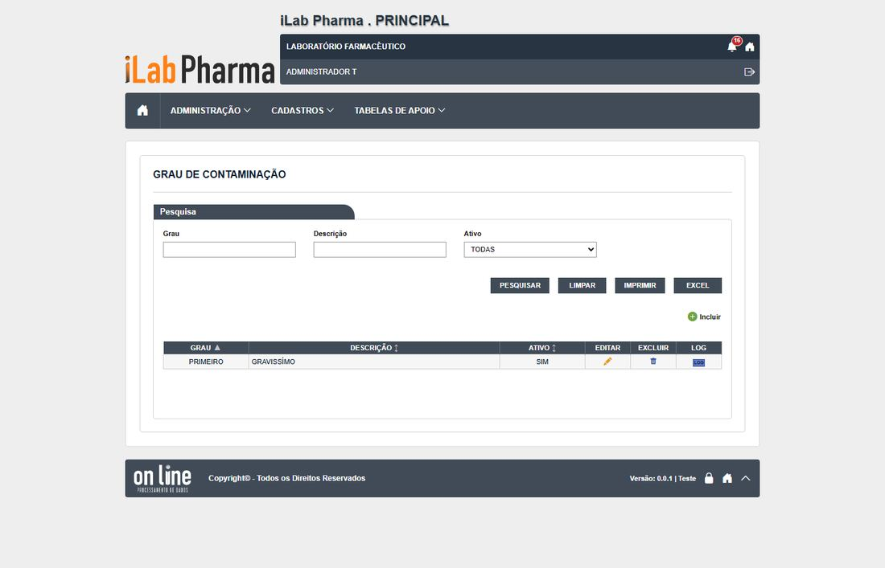
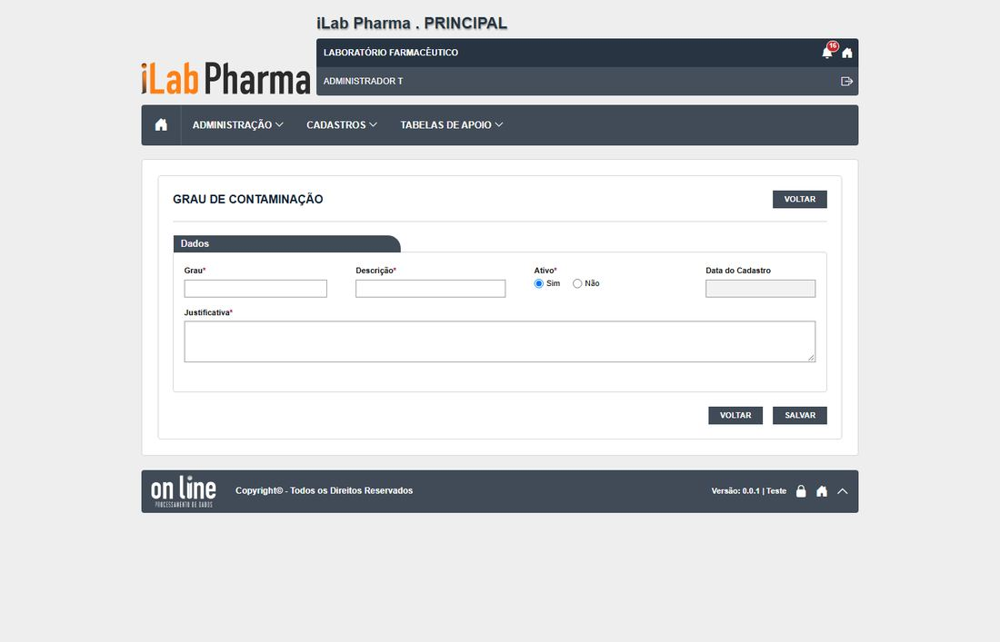
2. Regras de negócio: Grau de contaminação
Regras que a tela mostrou nos testes. A classe compara com o sistema entregue: Igual, Regressão (piorou), Melhoria, Novo (sem resultado no sistema entregue) ou Bloqueado.
| Caso | Cenário | Legado | Versão nova (o que a tela mostrou) | Classe | Defeito |
|---|---|---|---|---|---|
| RG-PRI-040 | Incluir e obrigatórios | sem caso | Mensagens por campo; inclui sem confirmação; duplicado recusado | Igual | N-003, N-008 |
| RG-PRI-041 | Limites e formatos | sem caso | Grau 10, descrição 255, justificativa 255 (o legado deixou 300) | Igual | — |
| RG-PRI-042 | Alterar com justificativa e histórico | sem caso | Grava sem confirmação | Igual | N-008 |
| RG-PRI-043 | Inativar | sem caso | Grava | Igual | — |
| RG-PRI-044 | Excluir | sem caso | Exige justificativa; some da lista | Igual | — |
| RG-PRI-046 | Pesquisa com e sem acento | sem caso | "gravissimo" não acha | Igual | DV-PRI-N-009 |
| RG-PRI-047 | Excel e Imprimir | sem caso | Baixa .xlsx e gera PDF | Igual | — |
| RG-PRI-048 | Histórico com justificativa | sem caso | O histórico omite a justificativa que a API devolve | Regressão | DV-PRI-N-001, N-002 |
3. Integração: Grau de contaminação
| Tela | Relação | Para quê | Situação |
|---|---|---|---|
| Ambientes | usa esta tela | graus do ambiente | visto |
4. Erros: Grau de contaminação
| Defeito | Gravidade | O que acontece |
|---|---|---|
| DV-PRI-N-001 | Alta | O histórico não mostra a justificativa das alterações, embora a API a devolva. Regressão (o legado mostra "Justificativa: …"). |
| DV-PRI-N-008 | Baixa | Inclui e altera sem pedir confirmação, diferente das outras telas. |
| DV-PRI-N-002 | Baixa | Textos do histórico sem acento. |
5. Onde melhorar: Grau de contaminação
- Mostrar a justificativa de cada evento no histórico (N-001; trilha de auditoria, ALCOA+).
- Padronizar a confirmação ao incluir e alterar (N-008).